본 포스트는 서울대학교 GSDS Sanghack Lee(이상학) 교수님의 Causal Inference 강의 자료(Causal Discovery 편)를 바탕으로, 강의를 처음 듣는 독자도 논리적 흐름을 따라갈 수 있도록 재구성한 것입니다. 원본 슬라이드는 Elias Bareinboim 교수님(with Daniel Kumor)의 Causal Discovery 강의와 Ilya Shpitser(JHU) 교수님의 강의 자료를 계보로 하며, Spirtes–Glymour–Scheines (1993), Verma & Pearl (1995), Chickering (2002), Shimizu et al. (2006), Hoyer et al. (2009), Zheng et al. (2018, 2020), Bello et al. (2022), Montagna et al. (2023)의 결과를 인용합니다. 지금까지의 회차가 모두 그래프가 주어졌다는 전제에서 출발했다는 점을 떠올리며 읽으시면, 이 회차가 왜 시리즈의 방향을 뒤집는지가 선명해집니다.
한 줄 요약 (TL;DR)
“관측 데이터만으로는 그래프를 하나로 좁힐 수 없다 — 좁힐 수 있는 데까지 좁히고, 그 이상은 추가 가정을 사서 넘는다.”
지금까지의 강의는 인과 그래프 \(G\)를 손에 쥔 채 개입 분포 \(P_x(y)\)를 식별하는 문제였습니다. 인과 발견(causal discovery)은 정확히 그 반대로, 개입이 없는 관측 분포 \(P(V)\)만 보고 \(G\)를 되찾으려 합니다. 문제는 \(P(V)\)가 그래프에 대해 말해 주는 것이 조건부 독립뿐이고, 서로 다른 DAG들이 같은 독립성 집합을 만들어 낸다는 데 있습니다. 그래서 제약 기반(PC)과 점수 기반(GES·NOTEARS·DAGMA) 은 아무리 데이터가 많아도 마르코프 동치류(CPDAG) 에서 멈춥니다. 이 벽을 넘는 유일한 방법은 독립성 바깥의 정보를 쓰는 것이고, 모수적 접근은 함수 형태나 잡음 분포에 가정을 얹어 “참 방향에서는 성립하지만 역방향에서는 깨지는 비대칭”을 만들어 냅니다 — 비선형 ANM의 잔차 독립성, LiNGAM의 비가우시안성, 점수 매칭의 말단 노드 판별이 모두 같은 전략의 변주입니다. 값은 정직하게 치릅니다: 인과 충분성, 충실성, 그리고 함수·잡음 클래스의 올바른 설정입니다.
들어가며: 인과 발견이란 무엇인가? (Introduction)
지금까지의 인과추론(Causal Inference) 강의에서는 인과 그래프 \(G\)가 이미 주어졌다고 가정하고, 그 위에서 개입 분포 \(P_x(y)\)를 식별하는 문제를 다루었습니다. 즉, “구조는 알고 있으니 효과를 계산하자”는 관점이었습니다.
이번 강의의 인과 발견(Causal Discovery), 또는 구조 학습(Structure Learning)은 그 정반대 방향의 질문을 던집니다.
- 인과추론: 알려진 \(U\)가 인과 다이어그램 \(G\)를 유도하고, \(do(x)\) 개입 하의 \(P_x(y)\)를 구한다.
- 인과 발견: 관측 분포 \(P(V)\)(\(do(\emptyset)\), 즉 개입이 없는 상태)만 손에 쥐고서, 그 데이터를 만들어낸 그래프 \(G\) 자체를 거꾸로 추정한다.
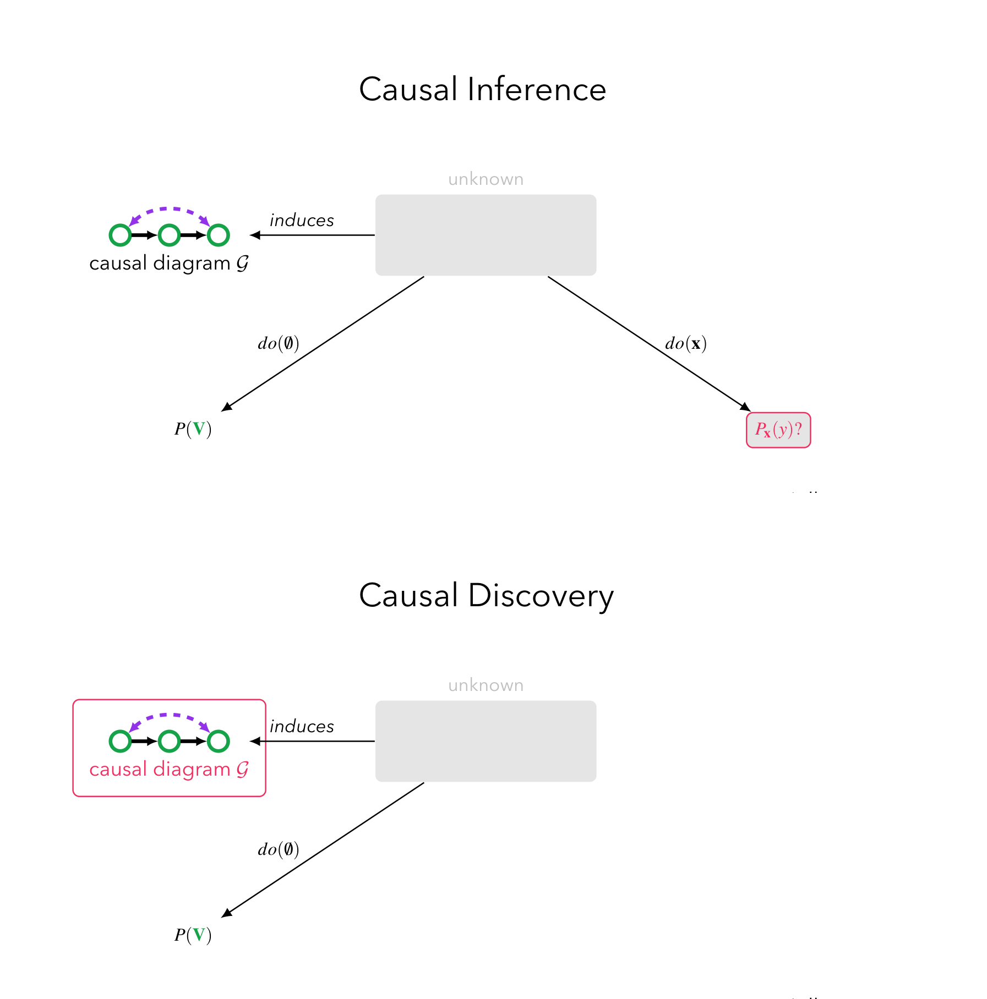
닭이 울면 해가 뜬다? (Rooster → Sun?)
직관적인 예시로 시작해 봅니다. 매일 아침 닭이 울고 곧이어 해가 뜬다는 관측 데이터(닭 울음 \(0/1\), 일출 \(0/1\))가 쌓였다고 합시다. 데이터의 상관관계만 보면 “닭 → 해”라는 화살표를 그리고 싶어집니다. 인과 발견의 핵심 난제가 바로 여기 있습니다. 관측 데이터의 통계적 패턴만으로 화살표의 방향을 결정하는 것은 본질적으로 어렵다는 것입니다.
구조 학습의 정의 (Structure Learning)
문제를 형식적으로 정의하면 다음과 같습니다.
- INPUT: 분포 \(P(V)\)로부터 독립적으로 샘플링되었다고 가정하는 데이터셋
- OUTPUT: 우리가 데이터에 대해 알아낸 사실들과 일관된(consistent) 그래프들의 집합 (이상적으로는 참 그래프 \(G\)를 포함)
여기서 출력이 하나의 그래프가 아니라 그래프들의 집합이라는 점에 주목해야 합니다. 또한 이 문제에는 정답 레이블이 없으므로, 인과 발견은 본질적으로 비지도 학습(unsupervised learning) 문제입니다.
DAG 모델과 세 가지 정의 (DAG Models)
이 강의 전체에서 우리는 DAG(Directed Acyclic Graph) 모델에 집중합니다.
- 변수 집합 \(V\)의 인과 구조란, 각 노드가 \(V\)의 서로 다른 원소에 대응하고 각 방향 간선이 변수들 간의 직접적 함수 관계를 나타내는 방향 비순환 그래프입니다.
- 여기서 DAG 모델은 마르코프 모델(Markovian model)에 대응합니다. 이는 곧 인과 충분성(Causal Sufficiency), 즉 측정된 변수들 사이에 측정되지 않은 교란 변수(unmeasured confounder)가 없다는 강한 가정을 깔고 있음을 의미합니다.
하나의 DAG 모델은 동등한 세 가지 정의로 기술될 수 있습니다. 예시 그래프 \(A \to B,\ A \to C,\ B \to D,\ C \to D,\ D \to E\)를 기준으로 보겠습니다.
- 인수분해 (Factorization): \[P(A,B,C,D,E) = P(E|D)\,P(D|B,C)\,P(C|A)\,P(B|A)\,P(A)\]
- 국소 마르코프 성질 (Local Markov property): 각 변수는 부모가 주어지면 비후손과 독립입니다. \[(C \perp\!\!\!\perp B \mid A),\quad (D \perp\!\!\!\perp A \mid B,C),\quad (E \perp\!\!\!\perp A,B,C \mid D)\]
- 전역 마르코프 성질 (Global Markov property): 임의의 \(A,B,C\)에 대해, \(G\)에서 \(A\)가 \(C\)가 주어졌을 때 \(B\)와 d-분리되면, \(P(V)\)에서 \((A \perp\!\!\!\perp B \mid C)\)가 성립합니다.
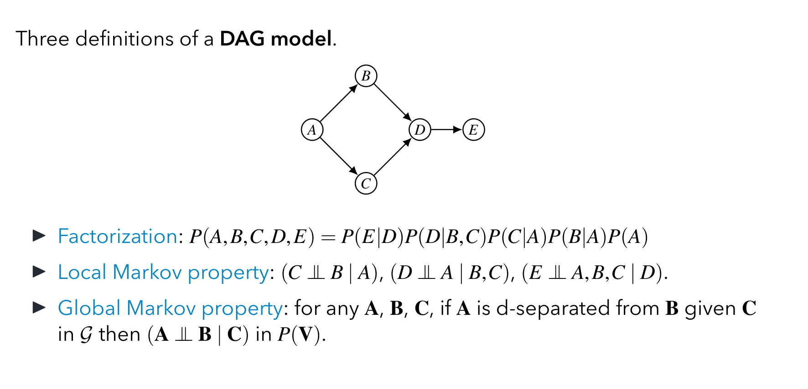
데이터로부터 DAG를 어떻게 학습하는가?
전역 마르코프 성질은 한쪽 방향의 함의(one-way implication)일 뿐입니다.
\[\text{$G$에서의 모든 d-분리} \;\Longrightarrow\; P(V)\text{에서의 조건부 독립(CI)}\]
대우를 취하면 \(P(V)\)의 조건부 종속은 \(G\)의 d-연결을 함의합니다. 문제는 이 화살표가 단방향이라는 데 있습니다.
최소성(Minimality)의 필요성: 완전 연결 그래프(모든 쌍에 간선이 있는 그래프)는 어떤 \(P(V)\)와도 전역 마르코프 성질을 만족시킵니다(독립성 제약을 하나도 강제하지 않으므로). 따라서 단순히 마르코프 성질만으로는 의미 있는 구조를 골라낼 수 없으며, 함의의 방향을 역전시킬 추가 가정이 필요합니다.
충실성(Faithfulness): 이 역방향을 보장하는 핵심 가정입니다.
임의의 \(A, B, C\)에 대해,
\[A \text{가 } G \text{에서 } C \text{ 주어졌을 때 } B \text{와 d-분리} \;\Longleftrightarrow\; A \perp\!\!\!\perp B \mid C \text{ in } P(V)\]
즉 그래프의 분리 구조와 분포의 독립 구조가 정확히 일치한다는 가정입니다. 마르코프 성질이 주는 \(\Rightarrow\) 방향에 \(\Leftarrow\) 방향을 얹어 주는 것이 충실성의 역할이며, 인과 발견의 거의 모든 알고리즘이 이 가정 위에 서 있습니다.
충실성 가정에 대한 논의 (Assumptions — Faithfulness)
- 충실성은 \(G\)에 따라 인수분해되는 \(P(V)\)가 추가로 만족할 수도 있는 성질로 생각하면 됩니다.
- 대부분의 \(P(V)\)는 충실합니다. 충실하지 않은(unfaithful) 분포들은 측도 0(measure zero)의 집합을 이루기 때문입니다.
- 실무적 결론: 주어진 문제에 대해 충실성이 합리적인 가정인지 정당화하는 과정이 필요합니다.
- 유한 표본에서는 충실하지 않은 분포와 거의 충실하지 않은(nearly unfaithful) 분포를 구별하기 어렵고, 후자는 훨씬 많이 존재합니다. 데이터가 조건부 독립을 말할 때 그것이 진짜 d-분리 때문인지, 아니면 두 경로가 우연히 거의 상쇄된 것인지 알 길이 없습니다. 측도 0 논변은 비충실 분포를 정확히 맞히는 경우만 배제할 뿐, 그 근방은 배제하지 못합니다.
- 자연은 분포를 무작위로 고르지 않습니다. 항상성(homeostasis)이나 평형처럼, 생물학적·진화적 이유로 두 경로가 서로를 상쇄하도록 조정된 시스템이 실제로 존재합니다. 하필 우리가 관심을 갖는 조절 시스템이 그런 곳입니다.
충실성 위반의 예시 (Violation of Faithfulness)
대표적인 비충실 분포의 예입니다. 다음 SEM을 생각해 봅시다.
\[X \leftarrow \varepsilon_1,\qquad Z \leftarrow X + \varepsilon_Z,\qquad Y \leftarrow X - Z + \varepsilon_Y\]
그래프상으로 \(X \to Z\), \(X \to Y\), \(Z \to Y\) (계수는 각각 \(1, 1, -1\))이므로 \(X\)와 \(Y\)는 공집합으로 d-분리되지 않습니다. 그런데 대입하여 풀어보면,
\[X = \varepsilon_1,\qquad Z = \varepsilon_1 + \varepsilon_Z,\qquad Y = -\varepsilon_Z + \varepsilon_Y\]
이므로 \(Y\)는 \(\varepsilon_Z\)와 \(\varepsilon_Y\)만으로 표현됩니다. 따라서 \(X = \varepsilon_1\)과 \(Y\)는 통계적으로 독립입니다. 직접 경로(\(X \to Y\), 계수 \(+1\))와 간접 경로(\(X \to Z \to Y\), 계수 \(1 \times (-1) = -1\))의 효과가 정확히 상쇄되어, 그래프는 종속을 말하는데 분포는 독립을 말하는 충실성 위반이 발생한 것입니다.
1. 제약 기반 구조 학습 (Constraint-Based Structure Learning)
가장 고전적인 접근입니다. 핵심 아이디어는 단순합니다.
- 데이터에서 성립하는 제약(즉, 조건부 독립 CI)들을 찾는다.
- 이 제약과 모순되는 그래프들을 배제한다.
- 남은 것을 반환한다.
1.1 DAG는 어떤 제약을 부호화하는가?
\(W \to X,\ W \to Y,\ X \to Z,\ Y \to Z\) 형태의 그래프(즉 \(W\)가 \(X,Y\)의 공통 원인, \(Z\)가 \(X,Y\)의 공통 결과인 충돌자)를 예로 들어 \(X\)와 \(Y\) 사이에 어떤 제약이 강제되는지 살펴봅니다.
- \(X \perp\!\!\!\perp Y \mid W\) — 이 그래프가 강제하는 유일한 (조건부 독립) 제약입니다.
- \(X \not\perp\!\!\!\perp Y\) — 조건을 걸지 않으면 공통 원인 \(W\)를 통해 종속됩니다.
- \(X \not\perp\!\!\!\perp Y \mid W,Z\) — 충돌자 \(Z\)를 조건에 넣으면(열어버리면) 다시 종속됩니다.
- \(X \not\perp\!\!\!\perp Y \mid Z\) — 마찬가지로 충돌자만 조건에 넣어도 종속입니다.
핵심 통찰은 데이터가 이 독립성들을 정확히 가지고 있어야만 해당 그래프가 시스템에 대한 유효한 후보가 된다는 점입니다.
1.2 충실성으로 함의 역전시키기
앞서 d-분리 \(\Rightarrow\) CI는 보았습니다. 이제 충실성을 도입하면 그 역방향을 쓸 수 있습니다.
\[\text{d-separation in } G \;\Longleftarrow\; \text{CIs in } P\]
- 아직 어떤 CI도 모르는 상태에서 시스템에 대한 최선의 추측은 무방향 완전 그래프입니다.
- 완전(complete): 모든 쌍에 간선이 있음
- 무방향(undirected): 아직 방향을 모름
이제 발견한 CI들을 하나씩 적용하며 이 완전 그래프를 깎아 나갑니다.
인접성 (Adjacency)
어떤 \(A, B \in V\)에 대해 \(S \subseteq V \setminus \{A,B\}\)가 존재하여 \(A \perp\!\!\!\perp B \mid S\)이면, \(A\)와 \(B\)는 간선을 공유하지 않습니다.
이를 통해 간선을 제거해 나가면, 인접 관계만을 표현하는 골격(skeleton)을 얻습니다.
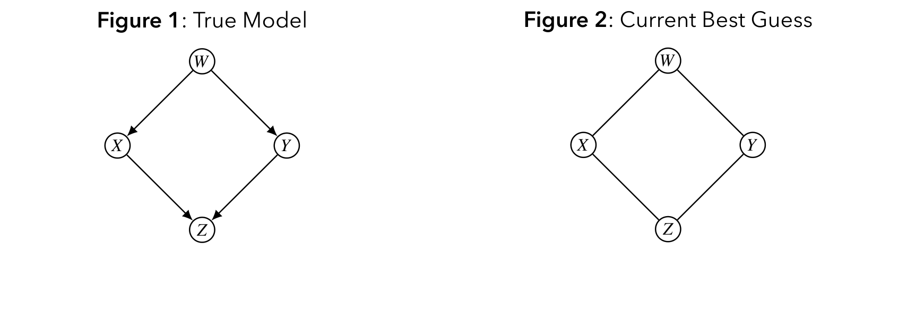
방향 결정 (Orientation) — 충돌자 규칙
골격을 얻은 뒤에는 충돌자(collider)를 이용해 일부 화살표 방향을 복원합니다.
비인접 쌍 \(A, B\)를 분리하는 집합 \(S\)가 있고, \(A - C - B\) 경로의 중간 노드 \(C\)가 그 분리집합 \(S\)에 들어있지 않다면, \(A \to C \leftarrow B\)로 방향을 정합니다.
관련 용어를 정리하면 다음과 같습니다.
- 비차폐 삼중쌍 (unshielded triple): \(A - B - C\) (단, \(A,C\) 비인접)
- 비차폐 충돌자 (unshielded collider): \(A \to B \leftarrow C\) (= v-구조 v-structure)
- 비차폐 비충돌자 (unshielded non-collider): 예: \(A \to B \to C\)
예를 들어 \(X \perp\!\!\!\perp Y \mid W\)에서 분리집합이 \(Z\)를 포함하지 않는다는 사실은, \(X - Z - Y\) 경로에서 \(x \to z \to y\), \(x \leftarrow z \to y\), \(x \leftarrow z \leftarrow y\) 세 가지 비충돌자 방향을 모두 배제하고 \(X \to Z \leftarrow Y\) 충돌자만 남깁니다.
1.3 동치류 (An Equivalence Class)
방향을 모두 정할 수는 없습니다. 동일한 독립성 집합을 만들어내는 서로 다른 DAG들이 존재하기 때문입니다. 이들을 묶은 것이 동치류입니다.
- 이런 그래프들을 관측적으로 동치(observationally equivalent) 또는 마르코프 동치(Markov equivalent)라 부릅니다. 국소 마르코프 성질이 동일한 독립성을 주기 때문입니다.
- 마르코프 동치류(Markov equivalence class): 서로 마르코프 동치인 DAG들의 집합
이를 정확히 특징짓는 정리가 있습니다.
두 개의 서로 다른 DAG \(G_1, G_2\)가 동일한 통계적 DAG 모델을 표현할 필요충분조건은, 둘이 골격(skeleton)과 비차폐 충돌자(unshielded collider, 즉 \(A,B\)가 비인접인 \(A \to C \leftarrow B\))를 공유하는 것입니다.
이 정리는 인과 발견 전체의 상한선을 정합니다. 관측 데이터가 알려 줄 수 있는 것은 골격과 v-구조까지이고, 그 둘이 같은 DAG들은 원리적으로 구별할 수 없습니다. 이후 §3의 모수적 접근은 바로 이 상한선을 넘기 위해 독립성 바깥의 정보를 동원하는 시도입니다.
- 한 동치류에 속한 모든 DAG는 무방향 간선과 방향 간선이 섞인 단일 혼합 그래프(mixed graph), 즉 패턴(pattern) 또는 CPDAG(Completed Partially Directed Acyclic Graph)로 표현됩니다.
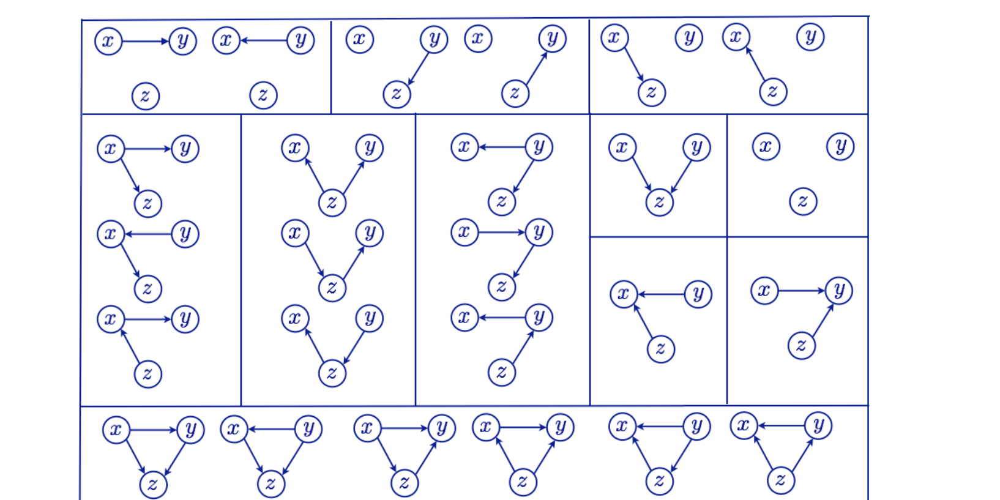
1.4 PC 알고리즘 (Peter Spirtes and Clark Glymour)
이름은 두 창시자 Peter Spirtes와 Clark Glymour의 머리글자에서 왔습니다.
기본 아이디어
- 두 정점이 인접하지 않으면, 이들을 분리하는 분리집합(separator)이 존재한다.
- 비차폐 충돌자 \(X \to Z \leftarrow Y\)라면, 그 분리집합은 \(Z\)를 포함하지 않아야 한다.
알고리즘 전체
\(n\)개의 정점을 가진 무방향 완전 그래프 \(G\)에서 시작합니다.
(1) 골격 학습. \(i = 0, 1, \dots, n-2\)에 대해, * \(G\)의 모든 인접 쌍 \(A, B\)에 대해, * 만약 \(\exists S\ (A \perp\!\!\!\perp B \mid S)\)가 존재하여 \[|S| = i,\qquad S \subset \mathrm{adj}_G(A) \cup \mathrm{adj}_G(B) \setminus \{A, B\}\] 를 만족하면, 간선 \(A - B\)를 제거하고 \(S\)를 \(\mathrm{sepset}[\{A,B\}]\)에 기록합니다.
조건집합의 크기 \(i\)를 0부터 점차 키워가며, 인접 노드들 중에서만 분리집합 후보를 찾는다는 점이 계산량을 줄이는 핵심입니다.
(2) v-구조 방향 결정. \(A - C - B\)이면서 \(A, B\)가 비인접인 모든 경우에 대해, * 만약 \(C \notin \mathrm{sepset}[\{A,B\}]\)이면, \(A \to C \leftarrow B\)로 방향을 정합니다.
(3) 나머지 방향 전파. 결과로 얻은 부분 방향 그래프(패턴)에서, 다음 두 조건을 지키며 가능한 한 많은 무방향 간선의 방향을 정합니다. * (2)에서 발견되었어야 할 새로운 v-구조를 만들지 않는다. * 방향 순환(directed cycle)을 만들지 않는다.
마지막 (3)단계를 체계화한 것이 다음의 Meek’s Rules입니다.
1.5 간선 방향 규칙 (Meek’s Rules)
새로운 v-구조와 순환을 만들지 않으면서 최대한 많은 간선을 정향하는 네 가지 규칙입니다.
Rule 1. \(a \to b\)가 있고 \(a\)와 \(c\)가 비인접이면, \(b - c\)를 \(b \to c\)로 정한다.
- 직관: 만약 \(b \leftarrow c\)로 정하면 \(a \to b \leftarrow c\)라는 새 v-구조가 생기는데, \(a,c\)가 비인접이므로 이는 (2)단계에서 이미 발견되었어야 합니다. 발견되지 않았으니 모순, 따라서 \(b \to c\).
Rule 2. \(a \to c \to b\)라는 사슬이 있으면, \(a - b\)를 \(a \to b\)로 정한다.
- 직관: \(a \leftarrow b\)로 정하면 \(a \to c \to b \to a\) 순환이 생기므로 금지됩니다.
Rule 3. \(a - c \to b\)와 \(a - d \to b\)라는 두 사슬이 있고 \(c, d\)가 비인접이면, \(a - b\)를 \(a \to b\)로 정한다.
Rule 4. \(a - c \to d\)와 \(c \to d \to b\)라는 두 사슬이 있고 \(c, b\)가 비인접이며 \(a, d\)가 인접이면, \(a - b\)를 \(a \to b\)로 정한다.
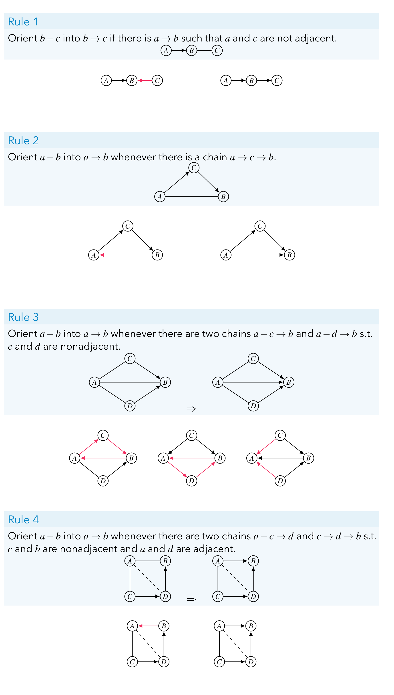
1.6 예제로 따라가는 PC 알고리즘 (A Walk-Through)
규칙만 나열하면 손에 잡히지 않으므로, 네 변수짜리 참 DAG 하나를 놓고 PC를 처음부터 끝까지 돌려 보겠습니다.
설정 — 참 DAG와 그것이 만드는 조건부 독립
참 DAG는 \(A \to B\), \(A \to C\), \(B \to D\), \(C \to D\)입니다. 즉 \(A\)가 분기점이고 \(D\)가 \(B, C\)의 충돌자인 마름모입니다. 이 그래프가 강제하는 조건부 독립은 정확히 두 개입니다.
- \(B \perp\!\!\!\perp C \mid A\) — 분기 \(B \leftarrow A \to C\)는 \(A\)를 조건에 넣으면 막히고, 다른 경로 \(B \to D \leftarrow C\)는 충돌자 \(D\)가 조건에 없으므로 애초에 막혀 있습니다.
- \(A \perp\!\!\!\perp D \mid \{B, C\}\) — \(A\)에서 \(D\)로 가는 두 경로 \(A \to B \to D\)와 \(A \to C \to D\)가 각각 \(B\)와 \(C\)에서 막힙니다.
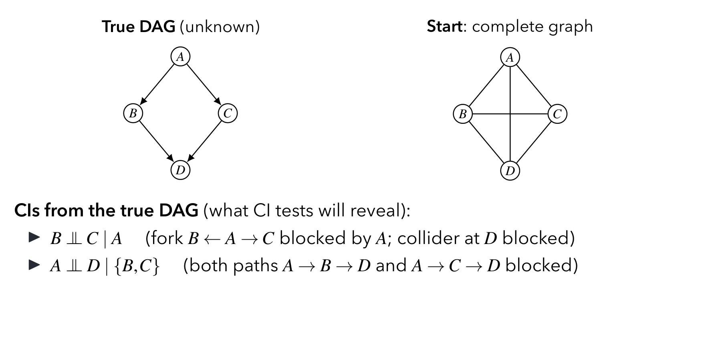
(1) 골격 학습 — 조건집합을 키워 가며 대각선을 지운다
- \(|S| = 0\): 모든 쌍을 무조건부로 검정합니다. 어느 쌍도 독립이 아니므로 간선 제거 없음.
- \(|S| = 1\): 이웃 하나씩을 조건에 넣어 봅니다. \(B \perp\!\!\!\perp C \mid A\)가 성립하므로 간선 \(B\)–\(C\)를 제거하고 \(\mathrm{sepset}[\{B,C\}] = \{A\}\)로 기록합니다. 나머지 쌍은 모두 종속입니다.
- \(|S| = 2\): \(A \perp\!\!\!\perp D \mid \{B,C\}\)가 성립하므로 간선 \(A\)–\(D\)를 제거하고 \(\mathrm{sepset}[\{A,D\}] = \{B,C\}\)로 기록합니다.
두 대각선이 지워지고 마름모 골격이 남습니다. 분리집합에 무엇이 들어갔는지를 함께 기록해 둔 것이 다음 단계의 유일한 단서입니다.
(2)–(3) 방향 결정 — v-구조 판정 후 Meek 규칙 전파
비인접 쌍마다 비차폐 삼중쌍을 점검합니다.
| 비인접 쌍 | 삼중쌍 | 분리집합 | 중간 노드 포함 여부 | 판정 |
|---|---|---|---|---|
| \(\{B,C\}\) | \(B - D - C\) | \(\{A\}\) | \(D \notin \{A\}\) | v-구조 \(B \to D \leftarrow C\) |
| \(\{B,C\}\) | \(B - A - C\) | \(\{A\}\) | \(A \in \{A\}\) | 충돌자 아님 |
| \(\{A,D\}\) | \(A - B - D\) | \(\{B,C\}\) | \(B \in \{B,C\}\) | 충돌자 아님 |
| \(\{A,D\}\) | \(A - C - D\) | \(\{B,C\}\) | \(C \in \{B,C\}\) | 충돌자 아님 |
이제 남은 무방향 간선 \(A\)–\(B\), \(A\)–\(C\)에 Meek Rule 1을 적용합니다. \(B \to D\)가 이미 있고 \(A, D\)가 비인접이므로 \(A \to B\)가 강제되고, 같은 논리로 \(A \to C\)가 강제됩니다. 최종 출력은 \(A \to B\), \(A \to C\), \(B \to D \leftarrow C\) — 참 DAG와 정확히 일치합니다.
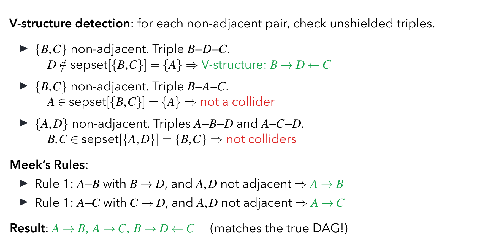
§1.3에서 관측 데이터는 동치류까지만 좁힌다고 했는데, 이 예제는 방향이 전부 정해졌습니다. 모순이 아닙니다 — 이 마름모의 마르코프 동치류가 원소 하나짜리이기 때문입니다. 충돌자 \(D\)의 존재가 v-구조를 하나 확정해 주고, 그 확정이 Meek Rule 1을 통해 위쪽 두 간선까지 밀어냅니다. 반대로 §1.2의 예제(모든 화살표가 \(W\)에서 나와 \(Z\)로 모이는 다이아몬드)처럼 v-구조가 없는 구조에서는 어떤 규칙도 방향을 확정하지 못하고 CPDAG에 무방향 간선이 남습니다. 동치류의 크기는 그래프가 얼마나 많은 v-구조를 품고 있는지에 달려 있습니다.
1.7 PC의 확장들 (Extensions of PC)
Conservative PC (Ramsey, Spirtes, Zhang 2006)
충실성을 두 부분으로 분해합니다: 인접성 충실성(Adjacency faithfulness) + 방향 충실성(Orientation faithfulness).
- 인접성 충실성: 인접하다면, 어떤 분리집합도 존재하지 않는다.
- 방향 충실성:
- \(X \to Z \leftarrow Y\)가 비차폐 충돌자를 이루면, \(Z\)를 포함하는 \(V \setminus \{X,Y\}\)의 모든 부분집합에 대해 \(X\)와 \(Y\)는 종속이다.
- 그렇지 않으면, \(Z\)를 포함하는 모든 분리집합에 대해 분리된다.
- 알고리즘적 함의: \(X\)의 잠재 부모 부분집합과 \(Y\)의 잠재 부모 부분집합을 모두 검사합니다.
- \(X,Y\)를 독립으로 만드는 그런 집합 어디에도 \(Z\)가 없으면 → 충돌자
- 그런 모든 집합에 \(Z\)가 있으면 → 비충돌자
- 그 외에는 해당 삼중쌍을 “비충실(unfaithful)”로 표시 (방향 충실성 위반에 강건)
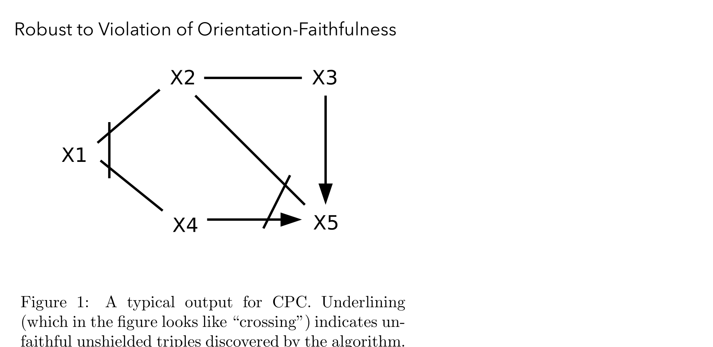
Order-Independency (Colombo and Maathuis 2014)
- 관찰: PC 알고리즘은 가능한 분리집합을 열거하며 CI를 검정하고, 분리집합을 찾는 즉시 간선을 제거합니다. 그런데 그 CI 검정이 거짓 음성(false negative)이라면? 변수 순서에 따라 결과가 달라지는 불안정성이 생깁니다.
- 해법 1: 무작위 변수 순서 + 결과 평균화
- 해법 2: 간선을 즉시 제거하지 말고, 같은 크기의 조건집합에 대한 반복이 끝난 후에만 제거 (PC-stable)
- Conservative PC가 너무 제한적이라는 문제 때문에 다수결 규칙(majority-rule)도 도입됩니다.
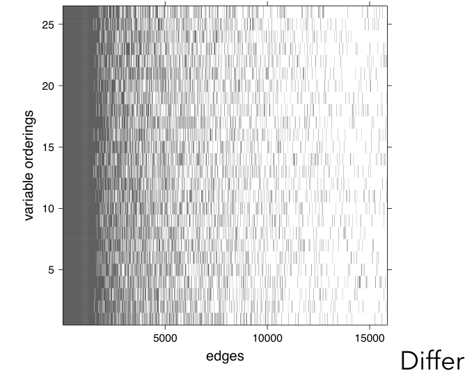
Fast Causal Inference (FCI)
- 인과 충분성을 가정하지 않을 때(즉 잠재 교란 변수를 허용할 때) 사용하는 알고리즘입니다.
- 출력은 DAG나 CPDAG가 아니라 PAG(Partial Ancestral Graph)이며, 간선 끝에 화살촉(\(\to\))뿐 아니라 원(circle, \(\circ\))이라는 미결정 표시가 등장하여 “잠재 교란자의 가능성”까지 표현합니다.
동작을 예제 하나로 보겠습니다.
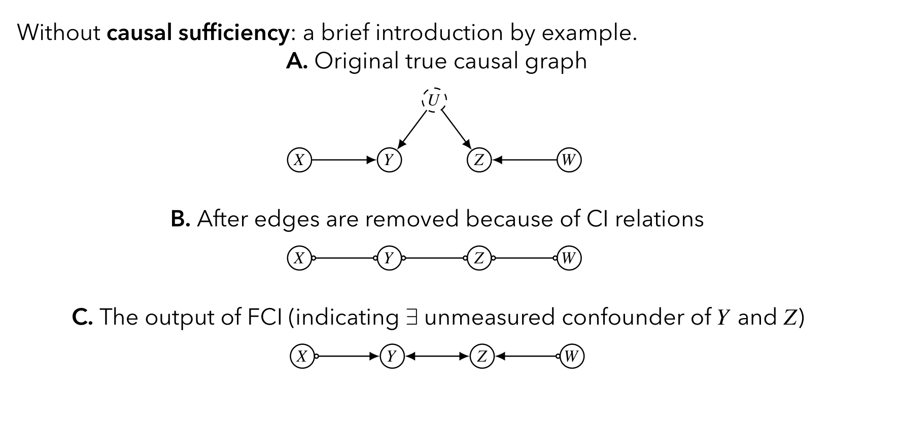
PAG의 간선 표기법은 다음과 같이 읽습니다.
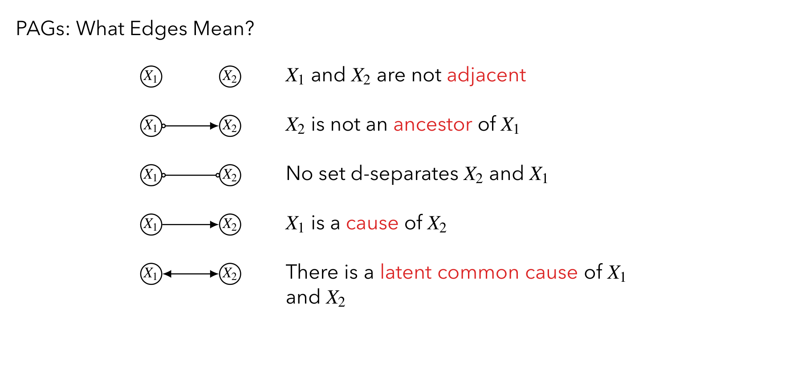
여기서는 “인과 충분성을 놓으면 출력이 PAG로 바뀐다”는 사실만 짚고 넘어갑니다. 조상 그래프(MAG)의 정의, m-분리, 판별 경로(discriminating path)와 FCI의 완전한 방향 규칙, 그리고 PAG 위에서의 조정집합 판정까지는 20강 MAG, PAG, and FCI에서 따로 다룹니다.
1.8 제약 기반 학습 요약
- 조건부 독립 제약은 기저 그래프 구조에 대한 부분적 정보를 추출하게 해 줍니다.
- PC 알고리즘이 조건부 독립 신탁(CI oracle)(모든 검정이 정확)에 접근할 수 있다고 가정하면, PC 알고리즘은 완전(complete)합니다.
- 실제로 조건부 독립 검정을 어떻게 하는가? — 선형 모델의 부분 상관(partial correlation), Fisher의 정확 검정, 커널 기반 CI 검정(kernel-based CI test), 모델 기반 CI 검정 등.
2. 점수 기반 접근 (Score-based Approaches)
제약 기반이 “CI를 검정해 후보를 깎아내는” 방식이라면, 점수 기반은 구조 전체에 점수를 매기고 그 점수를 최적화하는 방식입니다.
2.1 왜 다른 패러다임이 필요한가? (Why Score-Based?)
제약 기반 접근의 약점은 §1.7의 확장들이 계속 붙어야 했던 이유에서 이미 드러났습니다.
- 제약 기반은 조건부 독립 검정에 전적으로 의존하는데, 유한 표본에서 CI 검정은 신뢰하기 어렵습니다.
- 게다가 단 하나의 잘못된 CI 검정이 골격 단계에서 간선을 잘못 지우면, 그 오류가 분리집합을 오염시키고 v-구조 판정을 뒤집고 Meek 규칙을 타고 그래프 전체로 번집니다. 국소적 실수가 전역적 실패가 되는 구조입니다.
- 점수 기반은 전략을 바꿉니다. 개별 독립성을 하나씩 이분법으로 판정하는 대신, 그래프 전체가 데이터를 얼마나 잘 설명하는지를 하나의 실수 점수로 환산하고 그래프 공간에서 그 점수를 최적화합니다. 검정 하나가 흔들려도 점수는 조금 움직일 뿐입니다.
- 두 패러다임은 배타적이지 않고 상보적이며, 실제로 둘을 결합한 하이브리드(예: MMHC)도 존재합니다.
점수의 구성은 두 항입니다.
- 점수(Score): 구조가 데이터에 얼마나 잘 맞는지(fit) + 구조가 얼마나 단순한지(simplicity)를 함께 평가
- 이 점수를 최대화(또는 최소화)하는 구조를 탐색
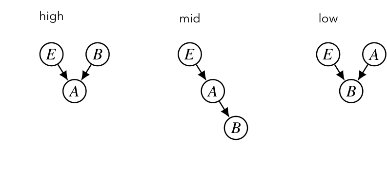
2.2 왜 가능한가? (Why Is It Possible?)
참 구조를 기준으로 두 가지 오류를 생각해 봅니다.
- 간선을 추가(Adding an arc): 적합해야 할 파라미터 수가 늘어나고, 인과·도메인 구조에 대한 잘못된 가정을 도입합니다.
- 간선을 누락(Missing an arc): 파라미터를 아무리 정확히 적합해도 보상되지 않으며, 역시 인과·도메인 구조를 놓칩니다.
즉, 데이터 적합도와 단순성을 동시에 따지면 참 구조 근처에서 점수가 최적이 되도록 설계할 수 있습니다.
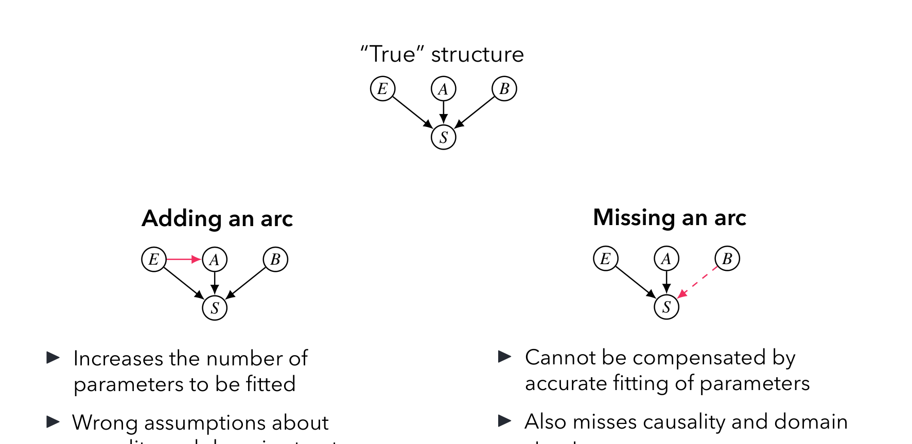
2.3 점수 기반 학습의 직관
- 참 그래프가 \(A \to B \leftarrow C\)(왼쪽, 충돌자), 제안 그래프가 \(C \to B \to A\)(오른쪽, 사슬)라고 합시다.
- 참 그래프에서는 \(A \perp\!\!\!\perp C\)이지만 \(A \not\perp\!\!\!\perp C \mid B\)입니다(충돌자를 조건에 넣으면 열립니다).
- 제안 그래프에서는 \(A \not\perp\!\!\!\perp C\)이지만 \(A \perp\!\!\!\perp C \mid B\)입니다(사슬의 중간을 조건에 넣으면 막힙니다).
- 데이터에서는 (\(A \perp\!\!\!\perp C\), \(A \not\perp\!\!\!\perp C \mid B\))가 관측될 것이므로 → 제안 그래프는 데이터에 잘 맞지 않습니다.
- 그렇다면 데이터 적합도를 어떻게 정량화할까요? → (로그) 가능도 함수(log-likelihood).
2.4 DAG 모델의 로그 가능도
DAG 인수분해를 다시 떠올립니다.
\[P(V) = \prod_{V_i \in V} P(V_i \mid \mathrm{Pa}_G(V_i))\]
각 \(V_i\)에 대해 모델 \(P_{\theta_i}(V_i \mid \mathrm{Pa}_G(V_i))\)를 가정하면, 데이터셋 \(D\)와 \(\theta = \{\theta_i \mid V_i \in V\}\)에 대한 로그 가능도는
\[\ell(\theta; D) = \sum_{j=1}^{n} \sum_{i=1}^{k} \log P_{\theta_i}\!\left(v_i^{\,j} \mid \mathrm{pa}_G(V_i)^{\,j}\right)\]
- 합이 변수별로 분리되므로, 각 \(\theta_i\)를 \(P(V_i \mid \mathrm{Pa}_G(V_i))\)에 관여하는 데이터 부분만으로 따로 적합할 수 있습니다.
- 이런 성질을 분해 가능한 가능도(decomposable likelihood)라 부릅니다. 점수 기반 탐색의 효율성의 근간입니다.
2.5 가능도를 점수로 쓸 때의 문제
앞의 예시에서 참 그래프(\(A \to B \leftarrow C\))와, 그보다 더 조밀한 제안 그래프(\(B \to A\), \(C \to B\), \(C \to A\) — 즉 세 간선을 모두 가진 완전 그래프)의 로그 가능도를 비교해 봅니다.
\[\ell_{\text{left}}(\theta; D) = \sum_{j=1}^{n} \log P_{\theta_A}(a^j) + \log P_{\theta_B}(b^j \mid a^j, c^j) + \log P_{\theta_C}(c^j)\]
\[\ell_{\text{right}}(\varphi; D) = \sum_{j=1}^{n} \log P_{\varphi_A}(a^j \mid b^j, c^j) + \log P_{\varphi_B}(b^j \mid c^j) + \log P_{\varphi_C}(c^j)\]
어느 쪽이 더 잘 맞을까요? 항상 오른쪽(\(\ell_{\text{right}}\))입니다. 이유는 모델 집합의 포함 관계에 있습니다.
\[\text{left: } \{P(A,B,C) \mid A \perp\!\!\!\perp C\} \quad\text{vs.}\quad \text{right: } \{P(A,B,C)\}\]
왼쪽 모델은 오른쪽의 부분 모델(submodel)이므로, 데이터를 결코 더 잘 맞출 수 없습니다.
바로 앞 §2.3에서는 참 그래프의 가능도가 더 높다고 했는데, 여기서는 참 그래프가 진다고 합니다. 모순처럼 보이지만 비교 대상이 다릅니다. §2.3은 간선 수가 같은 두 그래프(충돌자 대 사슬)를 비교했고, 여기서는 참 그래프 대 그것을 포함하는 더 조밀한 그래프를 비교합니다. 가능도는 모델 집합이 커지면 결코 감소하지 않으므로, 포함 관계가 있는 비교에서는 언제나 큰 쪽이 이깁니다. 가능도가 구조를 고를 수 있는 것은 복잡도가 같은 후보들 사이에서뿐이며, 복잡도가 다른 후보를 놓고 겨루게 하려면 벌점이 반드시 필요합니다.
가능도와 과적합 (Likelihood and Overfitting)
- 가능도만으로 점수를 매기면, 최고 점수 모델은 항상 완전 그래프입니다. (ML의 과적합)
- 참 그래프가 희소(sparse)하다면, 완전 그래프는 파라미터가 너무 많습니다. 데이터엔 잘 맞지만 문제의 참 구조를 포착하지 못합니다.
- 해법: 적합도는 보상하되 파라미터 과다는 벌점(penalty)으로 다스린다.
2.6 BIC 점수 (Bayesian Information Criterion)
벌점화된 점수의 대표격이 BIC입니다. DAG와 그 모든 마르코프 인자에 대한 파라미터화에 다음 수를 부여합니다.
\[\mathrm{BIC} = -2 \cdot \ell(\hat\theta; D) + m \cdot \log(n)\]
- \(m\): 파라미터의 수, \(n\): 표본 수
- 낮은 점수의 모델을 선호합니다. (첫 항은 적합도, 둘째 항 \(m\log n\)은 복잡도 벌점)
- 그래프 구조에 대한 일종의 정규화(regularization)로 볼 수 있습니다.
\(m\)은 실제로 어떻게 세는가 — 선형 가우시안 베이지안 네트워크
\(m\)이 추상적으로 느껴지므로, 가장 흔히 쓰이는 선형 가우시안 모형에서 직접 세어 보겠습니다. 각 노드가
\[X_i = \beta_{0i} + \sum_{X_k \in \mathrm{Pa}(X_i)} \beta_{ki} X_k + \varepsilon_i, \qquad \varepsilon_i \sim \mathcal{N}(0, \sigma_i^2)\]
로 주어진다면, 노드 \(i\)가 소비하는 파라미터는 부모마다 기울기 하나, 거기에 절편 하나와 잡음 분산 하나입니다. 즉 \(|\mathrm{Pa}(X_i)| + 2\)개이고, 전체를 합하면
\[m = \sum_i \big\{ |\mathrm{Pa}(X_i)| + 2 \big\} = |E| + 2|V|\]
가 됩니다. 여기서 \(\sum_i |\mathrm{Pa}(X_i)|\)가 곧 간선의 총 개수 \(|E|\)입니다. 이 식이 말해 주는 바는 분명합니다 — 노드 수 \(|V|\)가 고정된 상황에서 BIC의 벌점 항은 오직 간선 개수에만 비례하며, 따라서 BIC 최적화는 사실상 “적합도를 얼마나 올려야 간선 하나를 살 수 있는가”를 \(\log n\) 단위로 값매김하는 일입니다. 표본이 커질수록 간선 값이 비싸져 더 희소한 그래프를 선호하게 된다는 점도 이 식에서 바로 읽힙니다.
2.7 점수 기반 탐색과 GES
- 소박한 탐색(Naive Search): 모든 DAG를 나열하고 각각 BIC를 계산해 최선을 고른다. → DAG는 기하급수적으로 많고, 가능도도 종종 계산 불가능. 비현실적.
- 국소 탐색(Local Search): 상태 공간을 모든 DAG로 두고, 임의의 DAG에서 임의의 DAG로 도달 가능한 ’국소 이동(local moves)’을 정의해, 다항 횟수의 이동으로 최선 상태를 찾는 영리한 알고리즘.
- GES(Greedy Equivalence Search): 상태와 국소 이동을 DAG가 아니라 동치류(equivalence class) 위에서 정의합니다.
GES 알고리즘 (Greedy Equivalence Search)
- 시작: 간선이 없는 그래프.
- 추가 단계(Addition phase): 점수 향상이 없을 때까지 반복.
- 현재 동치류에 간선 하나를 추가했을 때 가장 좋은 새 동치류를 고른다.
- 주의: 동치류에 간선을 추가하면, 시작 DAG에 따라 서로 다른 동치류로 이동합니다. 예: \(\{A \to B\ \ C,\ A \leftarrow B\ \ C\}\)에 \(B \leftarrow C\)를 추가하면 \(\{A \to B \leftarrow C\}\)로 가거나 \(\{A \leftarrow B \leftarrow C;\ A \leftarrow B \to C;\ A \to B \to C\}\)로 이동합니다.
- 제거 단계(Removal phase): 점수 향상이 없을 때까지 반복.
- 현재 동치류에서 간선 하나를 제거했을 때 가장 좋은 새 동치류를 고른다.
- 반환: 현재 동치류.
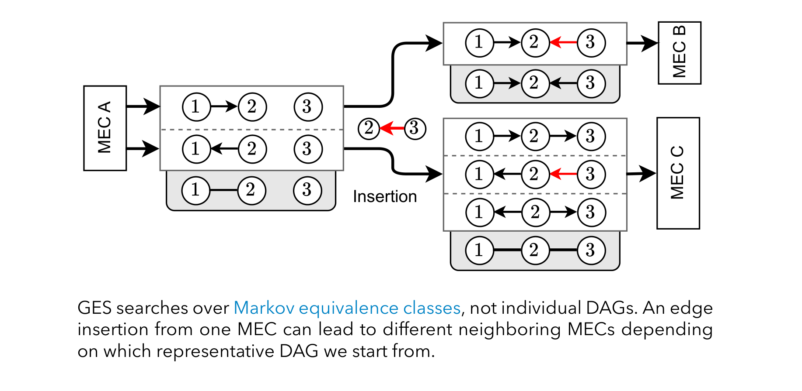
Insert와 Delete 연산자 (Insert and Delete Operators)
“간선 하나 추가/제거”를 동치류 공간에서 정확히 정의하려면, 추가되는 간선뿐 아니라 그 주변 무방향 간선들을 어떻게 정향할지까지 함께 지정해야 합니다. Chickering(2002)의 두 연산자가 그 역할을 합니다.
- \(\mathrm{Insert}(u, v, \mathbf{T})\) — 전진 단계
- 현재 비인접인 \(u, v\) 사이에 간선 \(u \to v\)를 추가합니다.
- \(\mathbf{T} \subseteq \mathrm{Ne}(v) \setminus \mathrm{Adj}(u)\) — \(v\)의 무방향 이웃 중 \(u\)와 인접하지 않은 것들의 부분집합입니다.
- 모든 \(t \in \mathbf{T}\)를 \(t \to v\)로 정향합니다. (이들이 새 비차폐 충돌자를 만들 수 있습니다.)
- 결과 그래프를 다시 CPDAG로 변환합니다.
- \(\mathrm{Delete}(u, v, \mathbf{H})\) — 후진 단계
- \(u\)와 \(v\) 사이의 간선을 제거합니다.
- \(\mathbf{H} \subseteq \mathrm{Ne}(v) \cap \mathrm{Adj}(u)\) — 지워지는 간선 주변의 공통 이웃들입니다.
- 각 \(h \in \mathbf{H}\)에 대해 \(h \to v\)와 \(h \to u\)로 정향합니다.
- 결과 그래프를 다시 CPDAG로 변환합니다.
두 연산자 모두 결과가 항상 유효한 CPDAG가 되도록 설계되어 있으므로, 탐색이 동치류 공간을 벗어나지 않습니다. 매 단계에서 GES는 가능한 \((u, v, \mathbf{T})\) 또는 \((u, v, \mathbf{H})\) 조합 중 점수 개선이 가장 큰 것을 고릅니다.
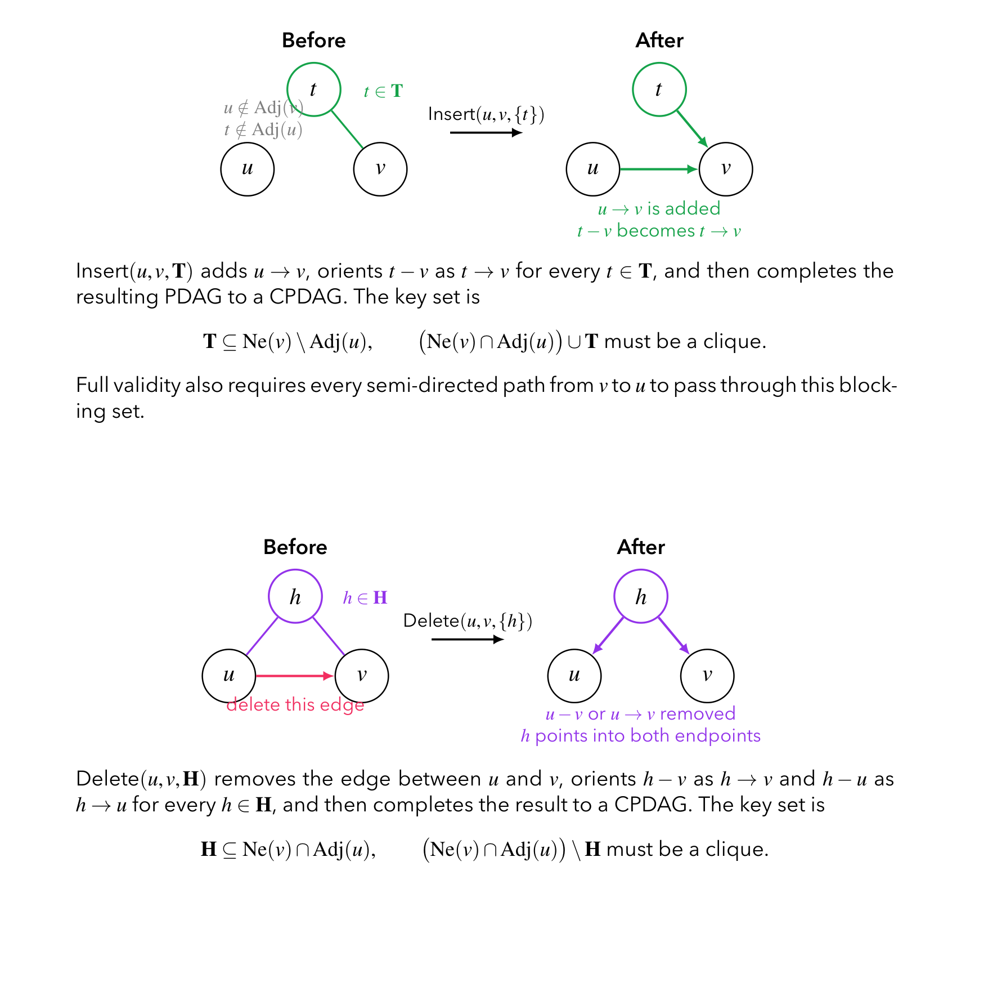
GES 예제 — v-구조 하나 복원하기
참 DAG가 \(A \to B \leftarrow C\)인 경우를 따라가 보겠습니다. 이 그래프의 동치류는 원소가 하나뿐입니다.
- 전진 단계
- 간선 없는 빈 그래프에서 시작합니다.
- \(\mathrm{Insert}(A, B, \emptyset)\) → \(A - B\). \(\{A \to B\}\)와 \(\{A \leftarrow B\}\)가 마르코프 동치이므로 이 시점의 CPDAG에서는 무방향으로 남습니다.
- \(\mathrm{Insert}(C, B, \{A\})\) → 이때 \(A \in \mathrm{Ne}(B) \setminus \mathrm{Adj}(C)\)이므로 \(A\)가 \(\mathbf{T}\)에 들어갈 자격이 있고, 연산의 정의에 따라 \(A \to B\)가 함께 정향되어 \(A \to B \leftarrow C\) 가 만들어집니다.
- 더 이상 점수를 올리는 추가가 없으므로 중단합니다.
- 후진 단계: 어떤 제거도 점수를 올리지 못하므로 중단합니다.
- 출력: \(A \to B \leftarrow C\) — 참 DAG와 일치합니다.
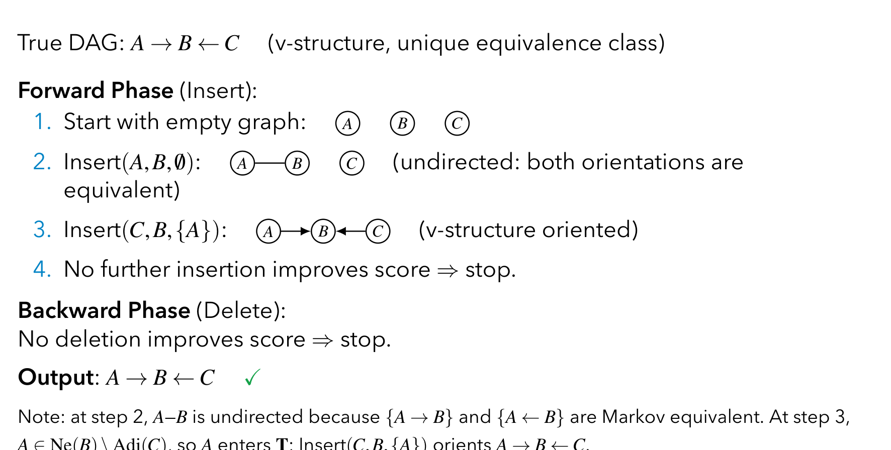
GES의 완전성
충실성 하에서, 그리고 \(n \to \infty\)의 극한에서 GES는 참 동치류를 정확히 식별합니다.
탐욕적(greedy) 절차임에도 극한에서 정답을 보장한다는 점이 놀라운 결과입니다. 다만 이것이 보장하는 것은 어디까지나 동치류이지 DAG가 아닙니다 — 제약 기반과 점수 기반은 접근이 전혀 다른데도 정확히 같은 벽 앞에서 멈춥니다.
2.8 최신 연구: NOTEARS (Zheng et al. 2018)
조합 최적화였던 구조 학습을, 블랙박스 연속 최적화로 바꾼 획기적 연구입니다. 가우시안 잡음을 반드시 요구하지 않는 선형 SEM을 학습합니다.
출발점 — 선형 SEM은 이미 행렬이다
전환의 실마리는 선형 SEM이 애초에 행렬 방정식이라는 사실에 있습니다. 9강에서 본 것처럼 각 변수를 부모의 선형결합에 잡음을 더한 형태로 쓰면, 구조 계수를 모아 놓은 행렬 \(W\) 하나로 그래프 전체가 부호화됩니다. 즉 “어떤 DAG인가”라는 조합적 질문이 “어떤 \(W\)인가”라는 연속적 질문으로 옮겨 갑니다 — 남은 문제는 \(W\)가 비순환 그래프에 대응하도록 강제하는 일뿐입니다.
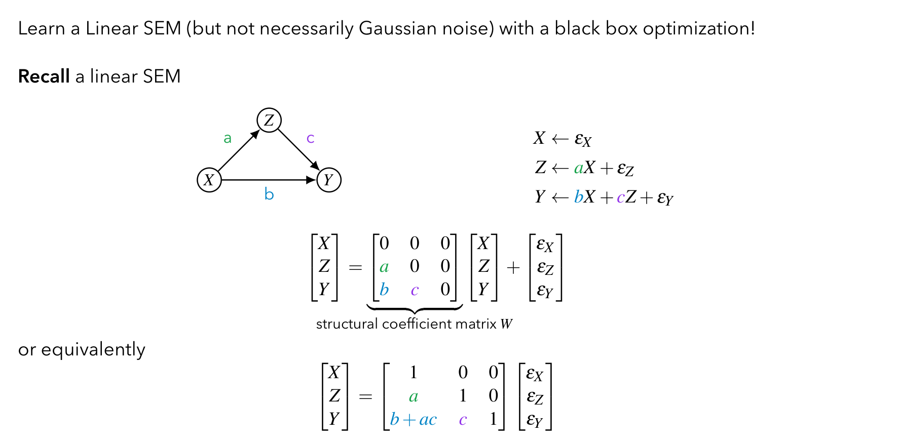
연속 최적화 문제로의 번역
데이터 행렬 \(X \in \mathbb{R}^{n \times d}\)와 구조 계수 \(W \in \mathbb{R}^{d \times d}\)에 대해,
\[\min_{W \in \mathbb{R}^{d \times d}} \ \frac{1}{2n} \|X - XW\|_F^2 + \lambda \|W\|_1 \quad \text{subject to} \quad \mathrm{tr}\!\left(e^{W \circ W}\right) - d = 0\]
여기서 \(\|\cdot\|_F\)는 프로베니우스 노름, \(\circ\)는 원소별(Hadamard) 곱, \(\|W\|_1\)은 희소성을 유도하는 \(\ell_1\) 벌점입니다. 핵심은 비순환성 제약을 매끄러운 등식 제약으로 바꾼 부분입니다.
왜 \(\mathrm{tr}(e^{W \circ W}) - d = 0\)이 DAG 조건인가?
- \(B\)를 이진 인접 행렬이라 하면 \(B^0 = I\)이고, \(B^k\)의 \((i,i)\) 원소는 \(i\)에서 출발해 \(i\)로 돌아오는 길이 \(k\) 보행(walk)의 수를 셉니다.
- 행렬 지수는 테일러 급수로 정의됩니다. \[e^{B} = \sum_{k=0}^{\infty} \frac{B^k}{k!}\]
- 대각합 \(\mathrm{tr}\)를 취하면 모든 정점에 대한 (가중) 순환 수를 셉니다. 길이 \(0\) 순환(\(\mathrm{tr}(B^0)=\mathrm{tr}(I)=d\)) 때문에 기저값이 \(d\)입니다.
- 따라서 \(\mathrm{tr}(e^{B}) = d\)일 필요충분조건은 \(B\)가 DAG라는 것입니다(0이 아닌 길이의 순환이 하나도 없음).
- \(W \circ W\)는 부호와 무관한 가중 인접 정보를 주므로, \(\mathrm{tr}(e^{W \circ W})\)는 가중 순환을 세고 이를 \(d\)와 같게 강제하면 비순환성이 보장됩니다.
참고로 논문 제목 DAGs with NO TEARS의 부제가 방법론 전체를 요약합니다 — Non-combinatorial Optimization via Trace Exponential and Augmented lagRangian for Structure learning.
2.9 비선형으로의 확장: NOTEARS-MLP (Zheng et al. 2020)
NOTEARS의 원래 형태는 선형 SEM에 묶여 있습니다. 후속 연구는 이 틀을 일반적인 함수 메커니즘으로 넓힙니다. 각 변수의 메커니즘을 함수 \(f_j\)로 두고, \(f_j\)가 \(X_k\)에 실제로 의존할 때만 간선 \(k \to j\)가 존재한다고 보아 유도 그래프 \(G(f)\)를 정의하면 문제는
\[\min_{f} \ L(f) \quad \text{subject to} \quad G(f) \in \mathrm{DAG}, \qquad L(f) = \frac{1}{n}\sum_{j=1}^{d} \ell\big(x_j,\, f_j(X)\big)\]
가 됩니다. 문제는 \(W\)가 사라졌다는 것입니다. 비순환성 벌점 \(h\)는 행렬을 입력으로 받는데, 비모수 모델에는 계수 행렬이 없습니다.
- 해법 — 편미분으로 의존성을 측정합니다. \(f_j\)가 \(X_k\)에 의존하지 않을 필요충분조건은 \(\|\partial_k f_j\|_{L^2} = 0\)이라는 관찰에서 출발해, 대리 행렬(surrogate)을 다음과 같이 정의합니다.
\[[W(f)]_{kj} := \big\| \partial_k f_j \big\|_{L^2}\]
이제 \(h(W(f)) = 0\)이라는 제약을 그대로 쓸 수 있습니다.
- MLP로 구현할 때는 더 단순해집니다. \(f_j\)를 다층 퍼셉트론 \(\mathrm{MLP}(u; A^{(1)}, \dots, A^{(h)})\)로 두면, 첫 층 가중치 \(A^{(1)}\)의 \(k\)번째 열이 전부 0일 때 출력이 \(u_k\)와 무관해집니다. 따라서 \([W(\theta)]_{kj} = \|A_j^{(1)}\text{의 } k\text{번째 열}\|_2\)로 두고
\[\min_{\theta} \ \frac{1}{n}\sum_{j=1}^{d} \ell\big(x_j, \mathrm{MLP}(X; \theta_j)\big) + \lambda \big\| A_j^{(1)} \big\|_{1,1} \quad \text{s.t.} \quad h(W(\theta)) = 0\]
를 풀면 됩니다. 즉 “간선이 없다”가 “첫 층의 한 열이 0이다”로 번역되고, 희소성은 그 열들에 대한 그룹 \(\ell_1\) 벌점이 유도합니다.
2.10 벌점을 바꾸다: DAGMA (Bello et al. 2022)
NOTEARS의 \(h_{\mathrm{NOTEARS}}(W) = \mathrm{tr}(e^{W \circ W}) - d\)는 매끄럽기는 하지만 계산이 만만치 않습니다.
- 매 평가마다 행렬 지수를 계산해야 합니다.
- 그래프가 커지면 최적화 거동 자체가 까다로워집니다.
DAGMA는 같은 자리에 로그 행렬식(log-determinant) 기반의 다른 매끄러운 벌점을 넣습니다.
\[h_{\mathrm{DAGMA}}(W) = -\log\det\big(sI - W \circ W\big) + d \log s, \qquad s > 0 \ (\text{예: } s = 1)\]
- 비순환 그래프는 벌점 \(0\)을 받습니다.
- 순환이 남아 있는 그래프는 양의 벌점을 받고, 순환이 심한 영역으로 갈수록 벌점이 급격히 커져 최적화가 쓸 만한 신호를 얻습니다.
- 전체 목적함수는 적합도·희소성·비순환성을 한꺼번에 다룹니다.
\[\min_{\theta} \ Q(f_\theta; X) + \beta \|\theta\|_1 + \lambda\, h_{\mathrm{DAGMA}}\big(W(\theta)\big)\]
NOTEARS에서 DAGMA로의 이동은 식별 가능성이나 인과적 전제를 바꾸지 않습니다. 바뀐 것은 비순환성을 강제하는 계산 장치뿐이며, 얻는 것은 더 빠른 최적화와 큰 그래프에서의 안정성입니다. 인과 발견 논문을 읽을 때 “새 가정을 도입한 연구”와 “같은 가정을 더 잘 푸는 연구”를 구분해 두면 문헌 지도가 훨씬 선명해지는데, DAGMA는 명백히 후자입니다.
2.11 점수 기반 접근 요약
- BIC와 GES의 보장은 대표본(large sample) 결과입니다. 유한 데이터에서는 달라질 수 있습니다.
- 점수를 다항 시간에 평가할 수 없으면 국소 탐색도 여전히 비현실적입니다.
- 각 \(P_{\theta_i}(V_i \mid \mathrm{Pa}_G(V_i))\) 모델을 잘못 설정하면 결과가 어긋납니다.
- 역시 은닉 변수가 없다(DAG 모델)고 가정했습니다.
제약 기반과 점수 기반, 나란히 놓고 보기
| 제약 기반 (PC, FCI) | 점수 기반 (GES, NOTEARS, DAGMA) | |
|---|---|---|
| 작동 원리 | CI 검정으로 간선을 쳐내고, 분리집합과 Meek 규칙으로 정향 | 점수 함수를 정의하고 그래프 공간을 탐색 |
| 출력 | CPDAG (FCI는 PAG) | CPDAG |
| 강점 | 가정이 가볍고 절차가 투명 | 표본이 작을 때 상대적으로 잘 작동 |
| 취약점 | CI 검정 오류에 민감하고 오류가 전역으로 전파 | 조건부 모델을 잘못 설정하면 그대로 어긋남 |
| 공통 전제 | 충실성 + 인과 충분성 (FCI만 후자를 완화) | 충실성 + 인과 충분성 |
두 접근을 결합한 하이브리드(예: MMHC)도 존재하며, 보통 제약 기반으로 골격 후보를 좁힌 뒤 그 안에서 점수 기반 탐색을 돌립니다.
3. 모수적 접근 (Parametric Approaches)
앞의 두 접근은 모두 동치류까지만 식별합니다(\(A \to B\)와 \(A \leftarrow B\)를 구별하지 못함). 모수적 접근은 함수 형태나 잡음 분포에 추가 가정을 두어, 두 변수 사이의 화살표 방향까지 식별하는 것을 목표로 합니다.
핵심 질문: 언제 \(x \to y\)로 방향을 정할 수 있는가?
산점도만 봐서는 \(x \to y\)인지 \(x \leftarrow y\)인지 알 수 없어 보입니다. 그러나 데이터에 비대칭(asymmetry)이 숨어 있다면 이야기가 달라집니다.
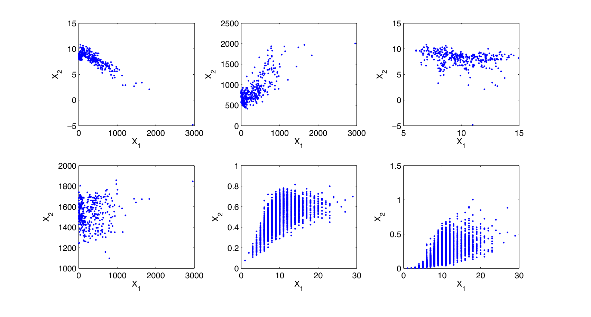
3.1 비선형 함수 (Nonlinear Function)
가산 잡음 모델 (The Additive Noise Model, ANM)
\[y = f_y(x) + u_y \qquad \text{and} \qquad x \perp\!\!\!\perp u_y\]
즉 결과는 원인의 (가능하면 비선형) 함수에 가산적으로 독립 잡음이 더해진 형태이며, 원인은 잡음과 독립입니다.
두 조건이 각각 무엇을 하는지 짚어 두겠습니다. 가산성은 잡음이 \(x\)와 뒤엉키지 않고 따로 떨어져 나온다는 뜻이라 잔차를 계산하면 곧바로 잡음의 추정치가 되고, 독립성 \(x \perp\!\!\!\perp u_y\)는 그 잔차가 입력과 아무 관계도 없어야 한다는 검정 가능한 제약을 만들어 줍니다. 이 둘이 함께 있어야 다음의 방향 판별이 성립합니다.
핵심 아이디어 (The Idea)
기저 분포가 ANM이라는 것을 안다면, 두 가설을 비교해 방향을 가릴 수 있습니다.
- 가설 1: \(y = f_y(x) + u_y\), \(x \perp\!\!\!\perp u_y\) → 그래프상 \(x \to y\)
- 가설 2: \(x = f_x(y) + u_x\), \(y \perp\!\!\!\perp u_x\) → 그래프상 \(x \leftarrow y\)
일반적으로 두 방향 모두에서 가산 잡음 + 독립성이 성립하기는 어렵기 때문에, 한쪽만 성립하면 그쪽으로 방향을 정할 수 있습니다.
두 가지 주요 방법
\(y = f(x) + u_y\)에서, 우리가 다룰 두 방법은 각각 다음을 가정합니다.
- \(f(x)\)가 비선형(non-linear) [Hoyer et al. 2009]
- \(f(x)\)는 선형이지만 \(u_y\)가 비가우시안(non-Gaussian) [Shimizu et al. 2006]
핵심 절차 (The Core Idea)
데이터 \((x_i, y_i)\)가 주어졌을 때:
- 양방향으로 함수를 적합합니다. 즉 \(\hat{y} = \hat{f}_y(x)\)와 \(\hat{x} = \hat{f}_x(y)\)가 되도록 최적 적합 함수 \(\hat{f}_x, \hat{f}_y\)를 (어떤 ML 알고리즘으로든) 찾습니다.
- 잔차(residual)를 정의합니다(잡음 \(u\)의 추정치에 해당). \[\hat{\varepsilon}_x = x - \hat{f}_x(y), \qquad \hat{\varepsilon}_y = y - \hat{f}_y(x)\]
- 잔차 독립성을 검정합니다. \[\hat{\varepsilon}_y \perp\!\!\!\perp x \ \Rightarrow\ X \to Y, \qquad \hat{\varepsilon}_x \perp\!\!\!\perp y \ \Rightarrow\ Y \to X\] 독립이 성립하는 방향이 인과 방향입니다. 어느 쪽도 성립하지 않으면 방향을 고르는 대신 ANM 가정 자체를 의심해야 합니다 — 잠재 교란이 있거나, 잡음이 가산적이지 않거나, 함수 클래스가 잘못 설정된 경우입니다.
이 비대칭이 실제 데이터에서 어떻게 보이는지를 두 장의 그림으로 확인해 보겠습니다.
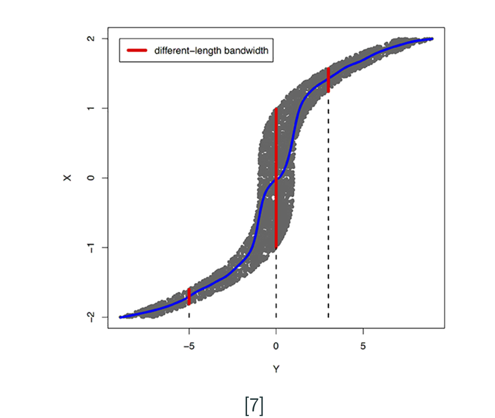
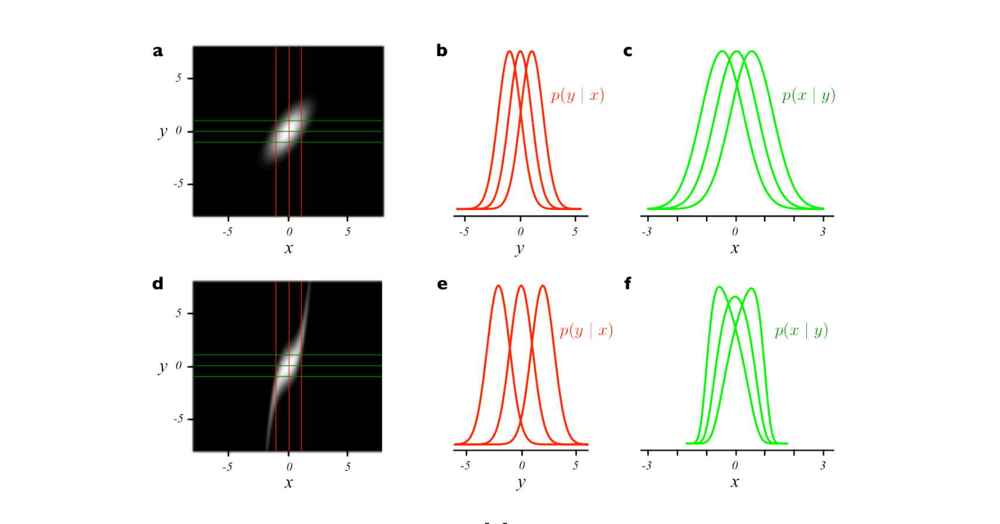
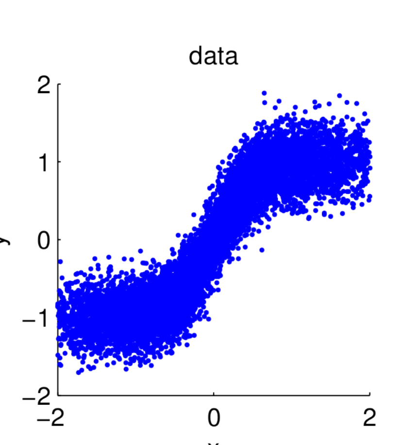
확장: 후-비선형 인과 모델 (Post-nonlinear Causal Model)
\(X_1 \to X_2\)이고 \(f_2\)가 가역(invertible)이라고 가정하면,
\[x_2 = f_2\big(f_1(x_1) + e_2\big)\]
이로부터 잡음을 역산할 수 있습니다.
\[e_2 = f_2^{-1}(x_2) - f_1(x_1)\]
가설 하에서 우리는 함수 \(\ell_1, \ell_2\)를 찾아 \(\hat{e}_2 = \ell_2(x_2) - \ell_1(x_1)\)이 \(x_1\)과 독립이 되도록 추정할 수 있습니다. 이는 제약된 비선형 ICA 문제이며, 다음 상호정보량을 최소화하여 달성됩니다.
\[I(x_1, \hat{e}_2) = -\mathbb{E}\log p_{\hat{e}_2}(\hat{e}_2) - \mathbb{E}\log \ell_2'(x_2) + H(x_1) - H(x_1, x_2)\]
(마지막 두 항 \(H(x_1)\), \(H(x_1,x_2)\)는 \(\ell_1, \ell_2\)와 무관하므로 최적화에서 무시됩니다. — Zhang and Hyvärinen 2009)
(보론) 이변량 ANM의 식별 가능성
이변량 모형 \(X_i := N_i\), \(X_j := f_j(X_i) + N_j\) (단 \(\{i,j\}=\{1,2\}\))가 ANM에 따라 생성될 때, 만약 삼중쌍 \((f_j, p_{N_i}, p_{N_j})\)가 \(f_j'(x_i)\,g''\!\big(x_j - f_j(x_i)\big) \neq 0\)인 모든 \(x_i, x_j\) 쌍에 대해 아래 미분방정식을 풀지 않는다면, 그 SEM은 식별 가능한(identifiable) 이변량 ANM입니다.
\[k''' = k''\left(-\frac{g''' f'}{g''} + \frac{f''}{f'}\right) - 2\,g'' f'' f' + g' f''' + \frac{g'\,g'''\,f''\,f'}{g''} - \frac{g'\,(f'')^2}{f'}\]
여기서 \(f := f_j\), \(k := \log p_{N_i}\), \(g := \log p_{N_j}\)입니다(가독성을 위해 \(g,k,f\)의 인자 \(x_j - f_j(x_i),\ x_i,\ x_i\)는 생략). 직관적으로, 이 ODE를 만족하는 특수한 조합(예: 선형 \(f\) + 가우시안 잡음)에서만 양방향이 동시에 ANM이 되어 식별이 불가능해지고, 그 외 대부분의 경우에는 한 방향만 성립하여 방향이 식별됩니다. — Montagna et al. (2023, CLeaR)
3.2 선형·비가우시안 잡음 (Linear and Non-Gaussian Noise)
Cramér 분해 정리
- 두 독립 실수값 확률변수의 합이 가우시안이면, 두 가수(summand)도 모두 가우시안이어야 한다.
- 귀납적으로, 임의의 유한 개 독립 실수값 변수의 합이 가우시안이면 모든 가수가 가우시안이다.
- 이는 중심극한정리(CLT)를 보완합니다. CLT에 따르면 독립 변수들의 합은 (적절한 조건 하에) 가우시안에 가까워지지만, 모든 가수가 가우시안이 아닌 한 정확히 가우시안이 될 수는 없습니다. → 비가우시안성이 방향 식별의 열쇠가 됩니다.
LiNGAM (Linear Non-Gaussian Acyclic Model)
\[y = ax + u_y\]
오차가 비가우시안이라고 가정합니다. 시스템을 풀어 쓰면
\[x = u_x, \qquad y = ax + u_y\]
이고, 행렬 형태로는
\[\begin{bmatrix} x \\ y \end{bmatrix} = \begin{bmatrix} 1 & 0 \\ a & 1 \end{bmatrix} \begin{bmatrix} u_x \\ u_y \end{bmatrix}\]
즉 관측 \((x,y)\)는 독립인 비가우시안 원천 \((u_x, u_y)\)의 선형 혼합(linear mixture)입니다.
비결 — ICA (Independent Component Analysis)
통계적으로 독립인 비가우시안 원천 \(s_1, \dots, s_n\)이 있고, 우리는 이들의 혼합 \(x = As\)만 관측한다고 합시다. \(x\)만 보고 \(A\)와 \(s\)를 어떻게 복원할까요?
- CLT를 떠올리면, \(s_1 + s_2 + \cdots\)는 극한에서 가우시안에 가까워집니다. 즉 \(x = a s_1 + b s_2\)는 \(s_1\)이나 \(s_2\) 각각보다 “더 가우시안처럼 보입니다.”
- 따라서 ICA는 시스템의 “비가우시안성을 최대화”하는 방향(벡터)을 찾아 독립 성분을 복원합니다. 모든 선형결합 \(w^\top x\) 중 가장 비가우시안적인 것이 원래의 독립 원천에 대응한다는 것이 핵심 통찰입니다.
“비가우시안성”은 어떻게 재는가
전략이 성립하려면 비가우시안성을 수치로 재는 도구가 필요합니다. 두 가지가 표준적으로 쓰입니다.
- 첨도(kurtosis, 4차 누율) \[\kappa(y) = \frac{\mathbb{E}\big[(y-\mu)^4\big]}{\mathrm{Var}(y)^2} - 3\]
- 가우시안이면 \(\kappa = 0\)입니다.
- \(\kappa > 0\)이면 초가우시안(super-Gaussian) — 꼬리가 두꺼운 분포(예: 라플라스).
- \(\kappa < 0\)이면 아가우시안(sub-Gaussian) — 꼬리가 얇은 분포(예: 균등분포).
- 계산은 간단하지만 4제곱이 들어가므로 이상치에 민감합니다.
- 음의 엔트로피(negentropy) \[J(y) = H(y_{\text{Gauss}}) - H(y) \ \ge\ 0\]
- \(y_{\text{Gauss}}\)는 \(y\)와 평균·분산이 같은 가우시안 확률변수입니다. 같은 분산을 가진 분포 중 엔트로피를 최대화하는 것이 가우시안이므로 \(J \ge 0\)이 보장됩니다.
- \(J(y) = 0\)일 필요충분조건은 \(y\)가 가우시안이라는 것입니다.
- 첨도보다 강건하지만 계산이 어려워 실제로는 근사식을 씁니다.
ICA가 실제로 내놓는 것과, 남는 비결정성
- 입력: 관측 데이터 \(x = As\) (여기서 \(s\)는 미지의 독립 비가우시안 원천)
- 출력: \(\hat{s} = W_{\text{ICA}}\, x\)가 되도록 하는 역혼합 행렬(unmixing matrix) \(W_{\text{ICA}}\)
- 본질적 비결정성: ICA는 원천을 순열과 스케일(부호 포함)까지만 복원합니다. 원천의 순서를 바꾸거나 각각에 상수를 곱해도 “독립인 비가우시안 성분들”이라는 조건은 그대로 성립하기 때문입니다.
이 마지막 항목이 곧 LiNGAM이 넘어야 할 장애물이며, 뒤에서 보듯 비순환성이 그 열쇠가 됩니다.
여기에 ICA를 어떻게 적용하는가?
\[\begin{bmatrix} x \\ y \end{bmatrix} = \begin{bmatrix} 1 & 0 \\ a & 1 \end{bmatrix} \begin{bmatrix} u_x \\ u_y \end{bmatrix}\]
\((x,y)\)에 ICA를 돌려서 혼합 행렬의 \(0\) 위치를 찾으면 됩니다. 위 삼각 구조에서 \((1,2)\) 원소가 \(0\)이라는 사실이 \(x \to y\) 방향(즉 \(y\)가 \(x\)의 함수)을 알려줍니다.
LiNGAM 일반형 (Shimizu, 2006)
(순서가 매겨진) 변수 \(X = \{X_1, \dots, X_d\}\)에 대한 인접 가중 행렬을 \(B\)라 하면,
\[x_i = \sum_{j < i} b_{ij} x_j + e_i\]
행렬 형태로는
\[x = Bx + e = (I - B)^{-1} e\]
\(W = I - B\)로 두면, ICA는 (순서·스케일·부호의 비결정성 때문에) 다음을 줍니다.
\[W_{\text{ICA}} = PDW\]
여기서 \(P\)는 순열(permutation), \(D\)는 대각(diagonal) 행렬입니다. 일반 ICA에서는 이 비결정성을 제거할 수 없지만, LiNGAM의 비순환 구조 덕분에 \(B\)를 유일하게 추정해 낼 수 있습니다.
LiNGAM 발견 알고리즘
- \(x = Bx + e\)이므로 \(e = (I-B)x \triangleq Wx\). 여기서 \(e\)는 독립 성분입니다.
- 데이터에 ICA를 적용: \(W_{\text{ICA}} = \mathrm{ICA}(X)\).
- \(W_{\text{ICA}}\)를 순열·재척도(rescale)하여 대각이 \(1\)이 되도록 만듭니다. (선형 SEM의 자기 계수는 1)
- \(W = \mathrm{normalize}\big(\mathrm{row\text{-}permute}(W_{\text{ICA}})\big)\)로 정리하고, \(B = I - W\)로 계수 행렬을 복원합니다. 통계적으로 \(0\)과 구별되지 않는 계수의 간선은 제거합니다.
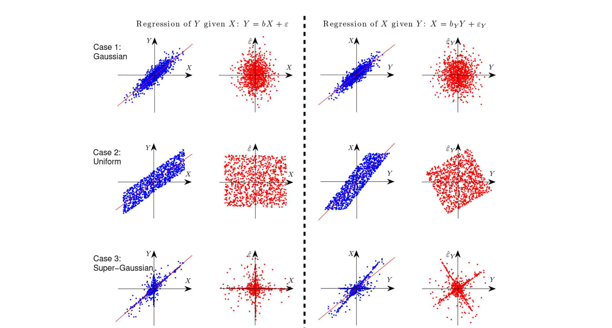
모수적 접근 요약
가산 잡음 모델 \(y = f(x) + u_Y\)에서 \(f\)가 비선형이거나 \(u_Y\)가 비가우시안이라고 가정하면, 인과 화살표의 방향을 찾을 수 있습니다. 단, 잠재 교란이 없음, 즉 \(X \perp\!\!\!\perp U_Y\)를 가정합니다.
3.3 최적화 기반 알고리즘으로의 일반화
많은 모수적 방법은 다음의 일반적 최적화 틀로 통합됩니다.
\[\min_{f} \ L(f) \quad \text{subject to} \quad G(f) \in \text{DAG}, \qquad \text{where} \quad L(f) = \frac{1}{n}\sum_{j=1}^{d} \ell\big(x_j,\, f_j(X)\big)\]
기존 논문들의 전형적 전개 방식은 다음과 같습니다.
- 특정 모델을 가정한다.
- 그 특정 모델에 대해 식별 가능성을 증명한다.
- 그 특정 모델 학습을 위한 전용 알고리즘을 개발한다.
점수 매칭을 통한 인과 발견 (Score-Matching, Montagna et al. 2023)
가산 비선형 모델 \(X_i = f_i(\mathrm{PA}_i) + N_i\)를 고려합니다.
- 관찰: 말단 노드(leaf, sink)를 식별할 수 있으면, 그래프에서 말단을 재귀적으로 제거하며 인과 순서(causal order)를 구성할 수 있습니다. 인과 순서를 알면 구조를 정제·복원할 수 있습니다. (선행 연구: Mooij et al. 2009, RESIT by Peters et al. 2014)
여기서 말하는 점수(score)는 §2의 BIC/GES 점수와 전혀 다른 대상이므로 혼동하지 않도록 주의해야 합니다. 이것은 로그 밀도의 기울기입니다.
\[s(X) = \nabla_X \log p(X), \qquad s_i(X) = \frac{\partial}{\partial X_i} \log p(X)\]
즉 각 변수를 조금 움직였을 때 로그 밀도가 얼마나 변하는지를 나타내는 벡터장이며, 점수 매칭(score matching)은 밀도 \(p(X)\)를 명시적으로 추정하지 않고도 이 \(s(X)\)를 표본에서 추정하는 기법입니다.
왜 하필 말단 노드인가
핵심은 말단 노드에는 자식이 없다는 단순한 사실에 있습니다.
- 말단 \(X_l\)의 경우: 점수 성분이 \[s_l(X) = \partial_{N_l} \log p_l(N_l)\] 로 단순해집니다. 그리고 \(X_l\)을 나머지 변수 \(X_{-l}\)에 회귀해 얻은 잔차 \(R_l := X_l - q^*(X_{-l})\)는 모집단 수준에서 정확히 \(R_l = N_l\)이 됩니다. 따라서 \(s_l(X)\)는 \(R_l\)만의 함수입니다.
- 말단이 아닌 \(X_i\)의 경우: 점수 성분에 자식들로부터 오는 항이 남습니다. \[s_i(X) = \partial_{N_i} \log p_i(N_i) - \sum_{k \in \mathrm{CH}_i} (\cdots)\] 잔차 \(R_i\)는 이 남은 항들에 대한 정보를 담고 있지 않으므로, \(R_i\)만으로 \(s_i(X)\)를 예측할 수 없습니다.
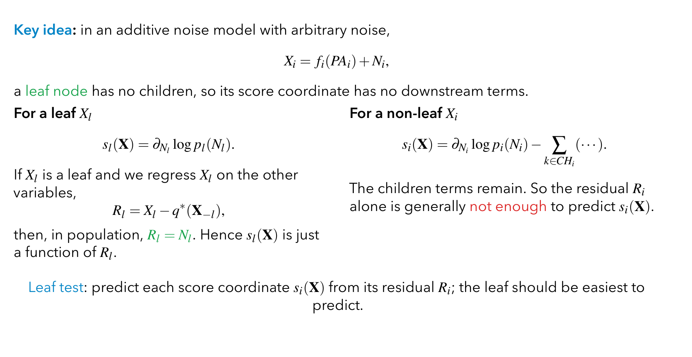
- 핵심 결과 (모집단 수준): \(X\)가 ANM에 따라 생성될 때, \[X_i \text{ is a leaf.} \iff \min_h \ \mathbb{E}\!\left[\big(h(R_i) - s_i(X)\big)^2\right] = 0\]
NoGAM 알고리즘 — 유한 표본에서의 구현
위 등식을 그대로 쓸 수는 없으므로, 실제 알고리즘은 예측 오차가 가장 작은 노드를 말단으로 채택하는 방식으로 완화합니다.
- 데이터로부터 점수 벡터 \(\hat{s}(X) \approx \nabla_X \log p(X)\)를 추정합니다.
- 남아 있는 각 노드 \(i\)에 대해 \(X_i\)를 \(X_{-i}\)에 회귀해 잔차 \(\hat{R}_i\)를 계산합니다.
- \(\hat{R}_i\)로부터 \(\hat{s}_i(X)\)를 예측하고 그 예측 MSE를 기록합니다.
- MSE가 가장 작은 노드를 말단으로 판정해 제거하고, 남은 노드들에 대해 2–3을 반복합니다.
- 말단 제거 순서를 뒤집으면 위상적 순서를 얻습니다. 마지막으로 불필요한 간선을 가지치기합니다.
이 방법의 이름이 NoGAM인 이유는 잡음 분포에 가우시안 같은 특정 형태를 요구하지 않고 임의의 잡음(arbitrary noise)에서 순서를 복원하기 때문입니다.
3.4 모수적 접근 종합 (Lecture Summary — Parametric Approaches)
제약 기반과 점수 기반은 마르코프 동치류(CPDAG)에서 멈춥니다. 모수적 가정은 분포의 비대칭을 이용해 CPDAG가 무방향으로 남긴 간선까지 정향하며, 종종 유일한 DAG를 복원합니다.
| 방법 | 도입하는 가정 | 이용하는 비대칭 | 얻는 것 |
|---|---|---|---|
| 비선형 ANM | \(y = f(x) + u_y\), \(f\)가 비선형 | 가산 잡음 적합이 한 방향에서만 성립 | 간선 하나의 방향 \(x \to y\) |
| LiNGAM | 선형 + 비가우시안 잡음 | 비가우시안 원천의 선형 혼합은 ICA로 분해 가능 | 동치류가 아닌 완전한 DAG |
| 점수 매칭 / NoGAM | 가산 비선형 모델, 임의 잡음 | 점수 \(\nabla \log p\)가 말단 노드에서만 잔차의 함수 | 위상적 순서, 이후 구조 복원 |
세 방법은 겉모습이 전혀 다르지만 전략은 하나입니다 — 참 인과 방향은 만족하지만 그 역방향은 만족하지 못하는 비대칭을 하나 고르고, 데이터에서 그것을 검정한다.
값도 공통입니다. ① 인과 충분성 (\(x \perp\!\!\!\perp u_y\), 즉 잠재 교란이 없음), ② 함수·잡음 클래스의 올바른 설정, ③ 충실성에 준하는 식별 가능성 조건입니다. 그리고 유한 표본은 이 셋을 모두 압박합니다 — 비대칭이 미약할수록 검정력이 떨어지고, 클래스를 조금만 잘못 잡아도 “비대칭”이 모델 오설정의 부산물로 나타날 수 있습니다.
4. 시계열 인과 발견 (Time-Series)
마지막으로, 시간이라는 추가 차원이 있는 경우를 다룹니다.
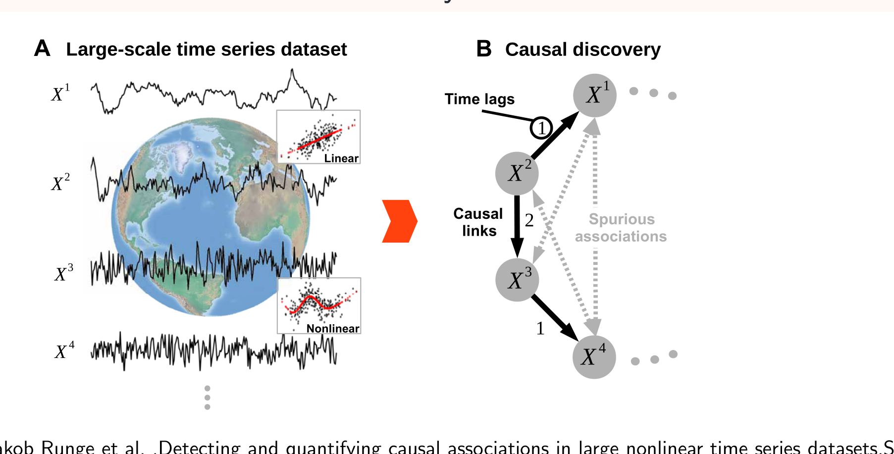
4.1 시계열 데이터의 특성
- 다변량 시계열은 많은 생물학·과학 탐구의 데이터 원천입니다. (예: 유전체학의 mRNA 발현 시계열, 신경심리학의 BOLD 신호)
- 기회(Opportunity) — 시간적 선행성(Temporal Precedence): 원인은 결과에 시간적으로 선행해야 한다는 사실을 활용합니다.
- 도전(Challenge): 데이터 획득률(샘플링 속도)이 느릴 수 있음, 비정상성(non-stationarity, 인과 구조 자체가 진화), 측정되지 않은 교란, 시간적으로 집계된 데이터, 원 과정에서는 시차가 있던 영향이 표면적으로는 동시적으로 보이는 문제 등.
4.2 기본 아이디어와 알고리즘 지형
- 기본 아이디어: i.i.d.를 가정하거나, 시차 효과(lagged effect)의 수를 추정·가정한다(벡터 자기회귀의 표준 절차). 변수들을 시간축으로 펼쳐(unroll) \(X^i_{t-\tau} \to \cdots \to X^i_t\) 형태의 격자 그래프로 본다.
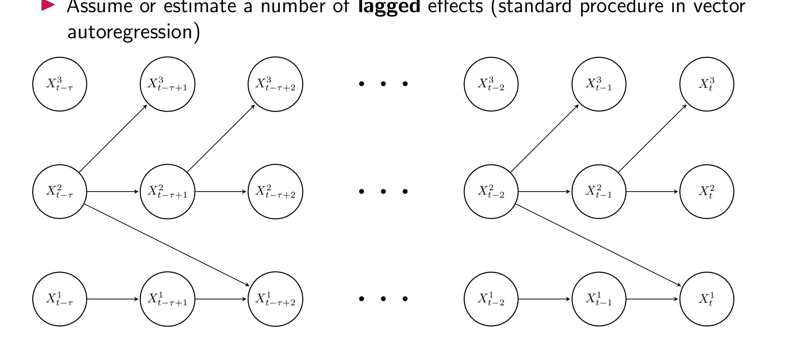
시계열용 대표 알고리즘과 그 계보는 다음과 같습니다.
- Granger 인과성 — 제약 기반(constraint-based)
- PCMCI — PC를 확장
- TiMINo — 함수적 인과 모델 + 독립 잡음 아이디어를 확장
- DYNOTEARS — NOTEARS를 확장
4.3 Granger 인과성
한 시계열이 다른 시계열에 대해 Granger 인과적이라는 것은, 전자의 정보를 제외한 모든 가용 정보만 쓸 때보다 전자의 정보까지 포함해 후자를 더 잘 예측할 수 있다는 뜻입니다.
- 정의(Granger 비인과성): \(V = \{X, Y\} \cup Z\)에 대해, 모든 \(t \in \mathbb{Z}\)에서 \[Y_{t+1} \perp\!\!\!\perp X^t \mid Y^t, Z^t\] 이면 \(X\)는 \(Y\)에 대해 Granger 비인과적이라 하고(\(X^t = \{X_1, \dots, X_t\}\)), 그렇지 않으면 \(X\)가 \(Y\)를 Granger 인과한다고 합니다.
- Granger는 이를 ‘\(X\)는 \(Y\)의 일견(prima facie) 원인’이라 표현하여, Granger 인과성이 어디까지나 잠재적 원인일 뿐임을 강조했습니다.
예시
엘니뇨(N)가 브리티시 컬럼비아 기온(B)을 2개월 시차로 ’유발’하는 경우, 다음을 서로 다른 \(\tau\)에 대해 검정하여 연결을 탐지합니다.
\[\text{Test } \ B_t \perp\!\!\!\perp N_{t-\tau} \mid B_{t-1},\ N_{t-1} \setminus \{N_{t-\tau}\} \quad \text{for different } \tau\text{'s}\]
VAR 모델을 통한 정식화
경험적 응용은 보통 벡터 자기회귀(VAR) 틀에 한정됩니다. \(p\)차 VAR(“VAR(\(p\))”)은
\[X_t = c + A_1 X_{t-1} + A_2 X_{t-2} + \cdots + A_p X_{t-p} + e_t\]
- 단변량: \(\displaystyle X_t = \sum_{u=1}^{\infty} A_u X_{t-u} + \varepsilon_t\)
- 다변량: \(\displaystyle X_{j,t} = \sum_{u=1}^{\infty} \sum_{k=1}^{d} A_{jk,u}\, X_{k,t-u} + \varepsilon_{j,t}\)
그러면 \(X_{j,t}\)가 \(X_{i,t-1}\)에 의존하지 않을 필요충분조건은 모든 시차 \(u > 0\)에 대해 \(A_{ji,u} = 0\)입니다.
- 대안적 특징화(MSE 기반): 전체 과거 \(X^{t-1}\)로 예측할 때와, \(X_i\)를 제외한 과거 \(X^{t-1}_{-i}\)로 예측할 때의 평균제곱오차를 비교합니다. \(X_i\)가 \(X_j\)를 Granger 인과하지 않을 필요충분조건은 \[\mathrm{var}\big(X_{j,t} \mid X^{t-1}\big) = \mathrm{var}\big(X_{j,t} \mid X^{t-1}_{-i}\big)\]
- 주의: Granger 인과성은 시간적 집계나 부분 샘플링(subsampling)에 매우 민감한 것으로 알려져 있습니다.
4.4 PCMCI
- 동기: Granger 인과성처럼 전체 조건화(full conditioning)를 쓰는 것은 바람직하지 않습니다(불필요한 변수까지 조건에 넣어 검정력이 떨어짐). PCMCI는 CI 검정의 조건집합 선택을 최적화하여, 탐지력을 높이면서 동시에 잘 보정된(well-calibrated) 검정을 유지합니다.
- 설정: 인과 충분성·충실성·마르코프 조건, 동시적(contemporaneous) 링크 없음, 데이터는 선형·비선형 모두 가능.
PCMCI는 이름 그대로 PC\(_1\) 단계 + MCI(Momentary CI) 단계로 구성됩니다.
- PC\(_1\) 단계: PC-stable 알고리즘으로 추정 부모 집합 \(\widehat{\mathrm{Pa}}(X_t^j)\)를 얻습니다(완전 검정은 아님).
- 인접성만을 위한 PC 알고리즘의 변형입니다.
- 크기 \(k\)의 가능한 모든 분리집합을 검정하는 대신, 크기 \(k\)의 단일 조건집합(가장 강하게 상관된 \(k\)개 변수)만 시도합니다.
- 함의: 이 단계 후에도 일부 거짓 부모(spurious parent)가 남을 수 있습니다.
- MCI 단계: 다음을 검정합니다. \[X_t^j \perp\!\!\!\perp X_{t-\tau}^i \ \Big|\ \widehat{\mathrm{Pa}}(X_t^j) \setminus \{X_{t-\tau}^i\},\ \widehat{\mathrm{Pa}}(X_{t-\tau}^i)\] 이론적으로는 부모의 상위집합 \(\widehat{\mathrm{Pa}}(X_t^j)\)만으로 충분하지만, 원인 후보 \(X_{t-\tau}^i\)의 부모까지 추가로 조건화하면 거짓 발견율(FDR)을 더 잘 통제할 수 있습니다.
4.5 독립 잡음을 갖는 시계열 모델 (TiMINo)
- 핵심 아이디어: 잡음이 IID라고 두고, 잡음들을 독립으로 만드는 함수를 적합합니다.
시계열 \(X_t = (X_t^i)_{i \in V}\)가 다음을 만족하는 \(p > 0\)과, 각 \(i \in V\)에 대한 집합 \(\mathrm{Pa}_i^0 \subseteq X^{V \setminus \{i\}}\), \(\mathrm{Pa}_i^k \subseteq X^V\)가 존재하면 TiMINo를 만족합니다(\(\forall t\)).
\[X_t^i = f_i\Big( \big(\mathrm{Pa}_i^p\big)_{t-p},\ \dots,\ \big(\mathrm{Pa}_i^1\big)_{t-1},\ \big(\mathrm{Pa}_i^0\big)_{t},\ N_t^i \Big)\]
단 \(N_t^i\)는 \(i\)와 \(t\)에 걸쳐 결합 독립(jointly independent)이고, 각 \(i\)에 대해 \(N_t^i\)는 \(t\)에 대해 동일 분포(identically distributed)입니다.
\(X_t\)가 TiMINo로 표현되고 다음 중 하나가 성립하면 전체 시간 그래프(full time graph)를 복원할 수 있습니다.
- 함수들이 식별 가능한 함수 클래스에서 왔다.
- 각 성분이 시간 구조를 가진다 — 즉 \(\mathrm{Pa}(X_t^i)\)가 적어도 하나의 \(X_{t-k}^i\)를 포함한다.
TiMINo 알고리즘
- 입력: \(d\)차원 시계열 표본 \((X_1, \dots, X_T)\), 최대 차수 \(p\). \(S := (1, \dots, d)\).
- 반복:
- \(S\)의 각 \(k\)에 대해: \(X_{t-p:t-1}^k\)와 \(i \in S \setminus \{k\}\)의 \(X_{t-p:t}^i\)를 써서 \(X_t^k\)에 대해 TiMINo를 적합하고, 잔차가 \(X^i\)(\(i \in S\))와 독립인지 검정.
- 의존성이 가장 약한(weakest dependence) \(k^*\)를 고른다.
- \(S := S \setminus \{k^*\}\); \(\mathrm{pa}(k^*) := S\).
- (길이가 1이 될 때까지 반복) 마지막으로 각 \(k\)에 대해 독립 잔차를 얻는 데 불필요한 부모를 모두 제거.
- 출력: \(\mathrm{pa}(1), \dots, \mathrm{pa}(d)\).
가장 약한 의존성을 갖는 변수를 말단(sink)으로 보고 먼저 떼어낸다는 점이 다소 직관에 반하지만, 이것이 역순으로 인과 순서를 구성하는 방식입니다.
- 논의: 저자들은 VAR, 일반화 가산 모델(GAM), 가우시안 과정(GP)을 고려했습니다. 선형 모델에서는 TS-LiNGAM이 TiMINo의 특수 경우입니다.
4.6 DYNOTEARS
- 핵심 아이디어: 시차 데이터를 포함시켜 NOTEARS를 시계열로 일반화합니다. 비순환성은 동시적(contemporaneous) 관계에만 강제합니다.
구조적 VAR(SVAR)로, \(Y_1, \dots, Y_p\)를 \(X\)의 시차 버전이라 하면
\[X = XW + Y_1 A_1 + \cdots + Y_p A_p + Z\]
목적은 \(W\)가 비순환이라는 제약 하에 \(\ell(W, A)\)를 최소화하는 것입니다.
\[\ell(W, A) = \frac{1}{2n}\|X - XW - YA\|_F^2\]
희소성 벌점을 더하면
\[\min_{W, A} f(W, A) \quad \text{s.t. } W \text{ is acyclic}, \qquad f(W, A) = \ell(W, A) + \lambda_W \|W\|_1 + \lambda_A \|A\|_1\]
그리고 NOTEARS와 동일하게 증강 라그랑지안(augmented Lagrangian)으로 비순환 제약을 흡수합니다.
\[\min_{W, A} F(W, A), \qquad F(W, A) = f(W, A) + \frac{\rho}{2}\, h(W)^2 + \alpha\, h(W)\]
여기서 \(h(W) = \mathrm{tr}\big(e^{W \circ W}\big) - d\)입니다. 즉 \(W\)(동시적 구조)에만 DAG 제약이 걸리고, 시차 행렬 \(A_1, \dots, A_p\)는 자유롭게 둡니다(시간 선행성이 이미 방향을 보장하므로).
부록: 점수와 조건부 독립 검정의 세부 (Appendix)
본문에서 “점수를 계산한다”, “CI를 검정한다”고 넘어간 자리들을 채워 둡니다. 실제 구현에서는 이 선택들이 결과를 좌우합니다.
A.1 왜 충돌자 쪽 가능도가 더 큰가 — 상호정보량으로 본 유도
§2.3에서 참 그래프(충돌자)의 가능도가 더 높다고 했는데, 이를 정보이론 언어로 정확히 확인할 수 있습니다. 두 모델을
\[\text{left: } A \to B \leftarrow C, \qquad \text{right: } B \to A,\ C \to B\]
로 두고 각 국소 조건부 모델이 포화(saturated)되었다고 하면, 모집단에서 최대화된 로그 가능도는 조건부 엔트로피의 음수 합으로 분해됩니다.
\[\ell_{\text{left}}/n = -H(A) - H(C) - H(B \mid A, C)\] \[\ell_{\text{right}}/n = -H(C) - H(B \mid C) - H(A \mid B)\]
참 그래프가 충돌자라면 \(A \perp\!\!\!\perp C\)이므로 \(H(A) + H(C) + H(B \mid A,C) = H(A,B,C)\)가 성립합니다. 두 식을 빼면
\[\ell_{\text{left}}/n - \ell_{\text{right}}/n = H(A \mid B) + H(B \mid C) - H(A) - H(B \mid A, C) = I(A; C \mid B)\]
즉 차이가 정확히 조건부 상호정보량 \(I(A; C \mid B)\)입니다. 해석하면 이렇습니다 — 오른쪽 모델은 \(A\)를 \(B\)에 조건부로 둠으로써 이득을 보지만, \(B\)의 부모에서 \(A\)를 빼는 손실이 그보다 큽니다. 그리고 그 손실의 크기가 정확히 \(A \not\perp\!\!\!\perp C \mid B\)인 정도, 즉 충돌자가 열리는 정도입니다. \(I(A;C\mid B) > 0\)인 한 참 그래프가 이깁니다.
A.2 범주형 변수를 위한 베이지안 디리클레 점수족 (BD, BDe, BDeu)
BIC 외에 널리 쓰이는 점수족이 베이지안 디리클레(Bayesian Dirichlet, BD)입니다. 디리클레 분포가 다항분포의 켤레 사전분포라는 점을 이용해 그래프의 주변가능도를 닫힌 형태로 계산합니다.
\[\mathrm{BD}(G, D; \alpha) = \prod_{i=1}^{N} \prod_{j=1}^{q_i} \left[ \frac{\Gamma(\alpha_{ij})}{\Gamma(\alpha_{ij} + n_{ij})} \prod_{k=1}^{r_i} \frac{\Gamma\big(\alpha_{ijk} + n_{ijk}\big)}{\Gamma\big(\alpha_{ijk}\big)} \right]\]
여기서 \(i\)는 변수 인덱스, \(j\)는 그 변수의 부모 조합, \(k\)는 변수 자신의 값이며, \(\alpha_i\)는 가상 표본 크기(imaginary/equivalent sample size)입니다. \(\alpha_{ijk}\)를 어떻게 잡느냐에 따라 서로 다른 점수가 나옵니다.
| \(\alpha_{ijk}\) 설정 | 이름 | 성격 |
|---|---|---|
| \(\alpha_{ijk} = 1\) | K2 | 각 셀에 균일한 가상 관측 1개 |
| \(\alpha_{ijk} = 1/2\) | Jeffreys 사전분포 BD | 무정보 사전분포 계열 |
| \(\alpha_{ijk} = \alpha/(r_i q_i)\) | BDeu | 가상 표본 \(\alpha\)를 국소 CPT 셀에 균등 분배 |
- BD의 문제 (1): 사용자가 모든 변수–부모 조합에 대해 \(\alpha_{ijk}\)를 직접 지정해야 합니다.
- BD의 문제 (2): 동치인 구조에 같은 점수를 주지 않습니다. 마르코프 동치인 두 DAG가 다른 점수를 받으면 탐색이 방향에 대해 근거 없는 선호를 갖게 됩니다.
- BDe는 가상 표본 크기 \(\alpha\)를 도입해 이 문제를 고친 점수 동치(score-equivalent) 변형이고, BDeu는 그중 균등 배분을 택한 것입니다. 다만 BDeu가 “그래프에 대한 균등 사전분포”를 뜻하지는 않는다는 점에 주의해야 합니다.
A.3 BIC와 BDeu의 관계
최대화 형태로 다시 쓴 BIC(앞의 정의를 \(-2\)로 나눈 것)는 다음과 같이 국소 항으로 분해됩니다.
\[\mathrm{BIC}(G, D) = \sum_{i=1}^{N} \left[ \ell_i(\hat\theta_i) - \frac{\log n}{2}\, q_i (r_i - 1) \right]\]
여기서 \(\ell_i(\hat\theta_i)\)는 변수 \(i\)의 국소 최대 로그 가능도, \(q_i\)는 부모 조합의 수, \(r_i\)는 변수 \(i\)가 취하는 값의 수입니다.
- BIC 역시 점수 동치입니다.
- 그리고 BIC는 \(\log \mathrm{BDeu}\)의 대표본 라플라스 근사이며, \(n \to \infty\)에서 두 점수는 \(O(1)\) 항까지 일치합니다. 즉 빈도주의적 벌점화와 베이지안 주변가능도가 큰 표본에서 같은 곳으로 수렴한다는 뜻입니다.
A.4 조건부 독립은 실제로 어떻게 검정하는가
제약 기반 알고리즘의 성능은 결국 CI 검정의 품질에 달려 있습니다. 데이터 유형에 따라 표준적인 선택지가 다릅니다.
범주형 — 카이제곱 검정
\(P(X, Y \mid Z) = P(X \mid Z)P(Y \mid Z)\)가 모든 \(Z\) 값에 대해 성립하는지를 봅니다. \(Z\)의 각 수준마다 \(X\)–\(Y\) 분할표를 만들고, 조건부 독립 가정 하의 기대 도수
\[E(x, y \mid z) = \frac{N(x,z)\cdot N(y,z)}{N(z)}\]
를 계산한 뒤 관측 도수 \(O\)와 비교합니다.
\[\chi^2(Z=z) = \sum_{x,y} \frac{\big(O(x,y\mid z) - E(x,y\mid z)\big)^2}{E(x,y\mid z)}, \qquad \chi^2_{\text{total}} = \sum_z \chi^2(Z=z)\]
자유도는 \(\mathrm{df} = (|X|-1)\cdot(|Y|-1)\cdot|Z|\)이며, 이 통계량을 해당 자유도의 카이제곱 분포와 비교해 \(p\)-값을 얻습니다.
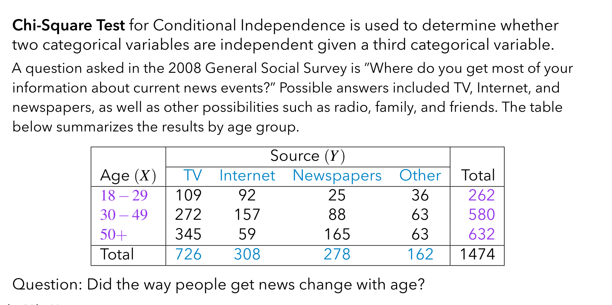
선형 관계 — 편상관 (Partial Correlation)
\(Z\)의 영향을 제거한 뒤 \(X\)와 \(Y\)가 얼마나 상관되어 있는지를 봅니다. 조건 변수가 하나일 때는
\[r_{XY \cdot Z} = \frac{r_{XY} - r_{XZ}\, r_{YZ}}{\sqrt{\big(1 - r^2_{XZ}\big)\big(1 - r^2_{YZ}\big)}}\]
이며, \(Z\)가 다변량일 때는 재귀적 편상관을 쓰거나 회귀 잔차 간 상관으로 계산합니다.
- \(r_{XY\cdot Z}\)가 여전히 크면 \(Z\)를 제거해도 \(X\)–\(Y\) 관계가 남아 있다는 뜻입니다.
- \(r_{XY\cdot Z}\)가 크게 떨어지면 \(Z\)가 두 변수의 상관을 대부분 설명한다는 뜻입니다.
비선형 — HSIC와 KCI
편상관은 선형 의존만 잡아냅니다. 관계가 비선형이거나 잡음이 비가우시안이면 커널 기반 검정이 필요합니다.
- HSIC (Hilbert-Schmidt Independence Criterion) — \(H_0: X \perp\!\!\!\perp Y\)를 검정하는 주변 독립성 도구입니다. \(X, Y\)에 커널 \(k, \ell\)을 골라 그람 행렬 \(K, L\)을 만들고, 중심화 행렬 \(H = I_n - \frac{1}{n}\mathbf{1}\mathbf{1}^\top\)에 대해 \[\widehat{\mathrm{HSIC}}(X,Y) = \frac{1}{n^2}\mathrm{tr}(KHLH)\] 를 씁니다. 특성 커널(characteristic kernel)을 쓰면 모집단 HSIC가 \(0\)일 필요충분조건이 \(X \perp\!\!\!\perp Y\)가 됩니다. 귀무분포는 순열 검정, 감마 근사, 점근분포 중 하나로 보정합니다.
- KCI (Kernel Conditional Independence test) — 조건부 귀무가설 \(H_0: X \perp\!\!\!\perp Y \mid Z\)를 직접 겨냥합니다. \(X, Y, Z\)를 커널 \(K_X, K_Y, K_Z\)로 표현한 뒤 RKHS에서 \(Z\)를 회귀로 제거하고 \[R_Z = \epsilon (K_Z + \epsilon I)^{-1}, \qquad \tilde{K}_X = R_Z K_X R_Z, \qquad \tilde{K}_Y = R_Z K_Y R_Z\] 잔차화된 의존성이 \(0\)인지를 \(T_{\mathrm{KCI}} = \frac{1}{n}\mathrm{tr}(\tilde{K}_X \tilde{K}_Y)\)로 검정합니다. PC 계열에서 Fisher-z나 카이제곱을 대체할 수 있지만, 계산 비용이 크고 커널 대역폭과 정칙화 상수 선택에 민감합니다.
인과 발견 논문은 대개 알고리즘(PC, GES, NOTEARS…)의 이름으로 기억되지만, 실무에서 결과를 가장 크게 좌우하는 것은 어떤 CI 검정을 썼는가인 경우가 많습니다. 관계가 비선형인 데이터에 편상관을 쓰면 존재하는 간선을 놓치고(거짓 음성), 표본이 작은데 조건집합이 큰 카이제곱 검정을 쓰면 없는 간선을 만들어 냅니다(거짓 양성). 그리고 §1.7에서 보았듯 CI 검정 하나의 오류는 그래프 전체로 번집니다.
마무리: 인과 발견 정리 (Summary)
네 가지 패러다임을 한눈에 정리합니다.
- 제약 기반(Constraint-Based): PC 알고리즘이 가장 대중적이지만 변형이 많습니다. 잘못된 CI 검정을 피하기 위한 여러 휴리스틱이 제안되어 있습니다.
- 점수 기반(Score-Based): 표본 크기가 상대적으로 작을 때 제약 기반보다 잘 작동하는 경향이 있습니다.
- 혼합(Hybrid): 두 접근을 결합한 알고리즘도 존재합니다(예: MMHC, 역시 휴리스틱 동반).
- 모수적(Parametric): 제약·점수 기반의 알려진 한계(동치류까지만 식별) 때문에, 구조를 추론할 수 있는 모수적 가정을 찾는 연구가 활발합니다.
- 다루지 않은 주제: 순환 그래프(Cyclic Graph), 다중 데이터 원천 결합(관측 + 개입 데이터 활용) 등.
정리하며 (Closing Remarks)
이번 회차의 논증 사슬을 단계별로 압축하면 다음과 같습니다.
| 단계 | 내용 | 근거 |
|---|---|---|
| ① 질문 뒤집기 | 그래프가 주어졌다는 전제를 버리고, 관측 분포 \(P(V)\)만으로 \(G\)를 되찾겠다고 선언한다 | 구조 학습의 정의 (§들어가며) |
| ② 다리 놓기 | 마르코프 성질은 “d-분리 \(\Rightarrow\) CI” 한 방향뿐이므로, 충실성을 가정해 화살표를 역전시킨다 | 전역 마르코프 성질 + 충실성 |
| ③ 깎아내기 | 발견한 CI로 무방향 완전 그래프에서 간선을 지워 골격을 얻고, 분리집합에 없는 중간 노드로 v-구조를 세운다 | 인접성·방향 결정 규칙, PC 알고리즘 (§1.4–1.6) |
| ④ 벽 확인 | 골격과 비차폐 충돌자가 같은 DAG들은 원리적으로 구별 불가 — 출력은 DAG가 아니라 CPDAG | Verma–Pearl 정리 (§1.3) |
| ⑤ 다른 길로 같은 벽 | CI 검정 대신 벌점화 점수를 최적화해도, 대표본 극한에서 도달하는 곳은 역시 참 동치류 | Chickering (2002) (§2.7) |
| ⑥ 연속화 | 조합적 탐색 자체를 버리고 \(\mathrm{tr}(e^{W \circ W}) - d = 0\) 같은 매끄러운 제약으로 비순환성을 표현해 경사법으로 푼다 | NOTEARS, NOTEARS-MLP, DAGMA (§2.8–2.10) |
| ⑦ 벽 넘기 | 함수·잡음에 가정을 얹어 참 방향에서만 성립하는 비대칭을 만들고, 그것을 검정해 동치류 안쪽까지 들어간다 | ANM, LiNGAM, 점수 매칭 (§3) |
| ⑧ 시간이라는 공짜 단서 | 시간축으로 펼치면 선행성이 방향과 비순환성을 자동으로 보장하므로, 남는 문제는 시차 선택과 검정력이다 | Granger, PCMCI, TiMINo, DYNOTEARS (§4) |
개인적인 감상 몇 가지를 덧붙입니다.
- 이 강의의 가장 인상적인 지점은 서로 완전히 다른 두 패러다임이 정확히 같은 벽 앞에서 멈춘다는 사실입니다. 제약 기반은 조건부 독립을 하나씩 검정하고, 점수 기반은 벌점화 가능도를 전역으로 최적화합니다. 방법론적 친척 관계가 거의 없는데도 둘 다 CPDAG에서 정지합니다. 이것이 알고리즘의 미숙함이 아니라 관측 분포가 담을 수 있는 정보량의 한계임을 Verma–Pearl 정리가 못 박아 주는 순간, 인과 발견 연구의 지형이 단번에 정리됩니다. 앞으로 나올 어떤 영리한 알고리즘도 “\(P(V)\)만 쓰면서 동치류를 넘겠다”고 주장한다면 그것은 틀렸거나 몰래 가정을 추가한 것입니다.
- 그래서 모수적 접근의 위치가 명확해집니다. ANM, LiNGAM, 점수 매칭은 서로 무관해 보이지만 하나의 전략을 공유합니다 — “참 방향은 만족하지만 역방향은 만족하지 못하는 비대칭을 하나 사 온다.” 비선형 함수의 잔차 독립성, 비가우시안 잡음의 ICA 분해 가능성, 말단 노드에서만 점수가 잔차의 함수가 된다는 성질은 모두 같은 문법의 다른 어휘입니다. 새 논문을 읽을 때 “이 방법은 어떤 비대칭을 샀고 그 대가로 무엇을 가정했는가”만 물어도 대부분 자리를 잡을 수 있습니다.
- NOTEARS의 발상 전환은 별도로 언급할 만합니다. \(\mathrm{tr}(e^{W \circ W}) - d = 0\)이라는 한 줄이 “비순환 그래프의 집합”이라는 조합적 대상을 매끄러운 등식 제약으로 바꿔 놓고, 그 순간 반세기 동안 조합 탐색의 영역이던 구조 학습이 통째로 경사 기반 최적화 문제가 됩니다. 다만 DAGMA가 곧바로 보여 주듯 이 전환은 인과적 진보가 아니라 계산적 진보입니다 — 식별 가능성은 한 치도 나아지지 않았습니다. 인과 발견 문헌을 읽을 때 “가정을 바꾼 연구”와 “같은 가정을 더 잘 푸는 연구”를 구분하는 습관이 필요하고, 최근 딥러닝 계열 논문 상당수가 후자에 속합니다.
- 실용적 한계도 정직하게 남습니다. 이 회차의 거의 모든 결과가 대표본 극한과 CI 신탁을 전제로 하는데, 실제 데이터에서는 검정 하나의 오류가 골격을 통해 그래프 전체로 번집니다. Conservative PC와 순서 독립 PC 같은 확장이 계속 등장하는 것 자체가 이 취약성이 얼마나 실질적인지를 말해 줍니다. 게다가 충실성은 검정할 수 없는 가정인데, 하필 우리가 관심을 갖는 항상성·평형 시스템이 그것을 깨기 쉬운 곳입니다. 결국 인과 발견은 자동화된 답이 아니라 가설 생성기로 쓰는 것이 정직한 사용법이고, 확정은 개입 데이터나 도메인 지식의 몫으로 남습니다.
- 끝으로 인과 충분성 가정이 이 회차의 가장 큰 미해결 항목입니다. §1.7에서 FCI를 잠깐 스쳤을 뿐, 본문의 PC·GES·NOTEARS·ANM·LiNGAM은 전부 “숨은 교란자는 없다”에 기대고 있습니다. 현실 데이터에서 이 가정이 성립하는 경우가 얼마나 될지 생각하면 다소 아득한데, 그 아득함을 정면으로 다루는 것이 20강 MAG, PAG, and FCI입니다.